JAuswertung
JAuswertung ist ein Programm der neuesten Generation zur Durchführung und Protokollierung von Wettkämpfen. Dabei spielt es keine Rolle, ob Sie Meisterschaften oder Freundschaftswettkämpfe durchführen wollen. Sie sind nicht an vorgegebene Disziplinen gebunden und können einfach neue Altersklassen, Disziplinen, Regelverstöße u. ä. festlegen. Auch um die Einteilung der Läufe (sowohl für den schwimmerischen Teil, als auch bei der HLW) müssen Sie sich keine Sorgen machen. JAuswertung kann eine Laufeinteilung nach Ihren Wünschen erstellen. Sollten Sie diese später anpassen wollen, wird JAuswertung Sie auch dabei unterstützen.
Zentrales Augenmerk wurde auf Bedienkomfort und hohe Eingabegeschwindigkeit gelegt. Wenn Sie z.B. in den Ergebnissen einen Fehler entdecken, können Sie diesen dort direkt ändern, wobei es keine Rolle spielt, ob es sich um eine falsche Zeit, einen falsch eingetragenen Regelverstoß oder einen falsch geschriebenen Namen handelt. Die laufweise Zeiteneingabe ermöglicht es Ihnen, Zeiten so wie sie bei Ihnen ankommen, direkt einzugeben. Diese Eingabemethode ist so effizient, dass Sie keine Probleme hätten, mehrere Wettkämpfe gleichzeitig auszuwerten.
Meldungen werden meist in einer Tabellenkalkulation verwaltet, bis Sie dann in ein Auswertungsprogramm übertragen werden. Auch dabei unterstützt Sie JAuswertung. Wenn die Daten als Excel- oder CSV-Datei vorliegen, können diese direkt importiert werden. Bei vielen Wettkämpfen wird ein Gesamtsieg an die erfolgreichste Gliederung vergeben. Auch eine Gesamtwertung müssen Sie nicht von Hand berechnen. Aktivieren Sie einfach die Gesamtwertung und stellen Sie sie nach Ihren Wünschen ein.
Darüber hinaus kann JAuswertung die eingegebenen Daten überprüfen und viele Fehler wie z.B. fehlende Zeiten oder bei nachträglich hinzugefügten Teilnehmern fehlende Eintragungen in die Laufliste erkennen. Anstatt also an verschiedenen Orten die Korrektheit Ihrer Daten überprüfen zu müssen, können Sie diese Informationen an einer Stelle abfragen und sofern sinnvoll auch direkt beheben. Weiterhin kann JAuswertung auch überprüfen, ob die eingegebenen Daten plausibel sind und Sie so z.B. bei sehr niedrigen oder hohen Zeiten informieren.
JAuswertung
Die Eingabe von Daten ist einfach, schnell und intuitiv.
Komfortable Eingabe von Schwimmern und Teams sowie zahlreiche Import- und Exportfunktionen.
Es werden das Regelwerk der DLRG, sowie Teile des internationalen Regelwerks unterstützt. Darüber hinaus können auf Wunsch auch weitere Regelwerke eingebunden werden.
Lauf- und HLW-Listen können automatisch erstellt und nach Belieben verändert werden.
Altersklassen können inklusive der dazugehörigen Disziplinen frei definiert und zur Wiederverwendung gespeichert werden. Änderungen an den Altersklassen sind auch während eines Wettkampfs noch möglich.
Kombinierte Auswertung mehrerer Wettkämpfe mit getrennten Ergebnissen.
Die Regelwerksverstöße des Regelwerks der DLRG sind komplett verfügbar. Darüber hinaus können während eines Wettkampfs neue definiert bzw. aus bestehenden abgeändert werden (z.B. bei einem Frühstart wird bei der Vergabe der Strafe "des dritten Schwimmers" hinzugefügt). Zur Unterstützung können vergebene Strafen mit allen nötigen Informationen (Schwimmer, Lauf, Bahn, Strafpunkte etc.) direkt ausgedruckt werden.
Umfangreiche Druckfunktionen aller benötigten Daten:
Lauflisten (in unterschiedlichen Versionen für Mannschaftsbetreuer und verschiedene Kampfrichterpositionen), Startkarten (auch HLW), Ergebnisse, ...
Leere Start-, Zieleinlauf- und Strafpunktekarten sowie HLW-Checklisten
Sie können Meldungen, Kampfrichterliste, Mannschaftsmitglieder sowie die Ergebnisse der HLW direkt aus CSV- oder Excel-Dateien importieren. Dazu verwenden Sie am besten die offiziellen Vorlagen. Diese finden Sie in einem einzelnen Download auf http://www.dennismueller.de
Sie können die Daten wie z.B. Meldelisten, Startkarten (Seriendruckvorlage), Lauflisten, HLW-Listen oder Ergebnisse eines Wettkampfs auch exportieren. Dabei stehen Ihnen verschiedene Formate wie z.B. Excel, HTML, XML, CSV oder PDF zu Auswahl bereit. So können die Informationen direkt im Internet präsentiert (HTML), zum Download angeboten (z.B. Excel und PDF) oder zur Aufbereitung z.B. zum Urkundendruck (XML, CSV und Excel) weitergegeben werden.
Das Programmpaket JAuswertung bietet die gesamte Funktionalität, die zur Auswertung von Wettkämpfen nach DLRG-Regelwerk benötigt wird. Dabei stehen innerhalb der Programme einige Funktionen nur dann zur Verfügung, wenn Sie sinnvoll sind. Z.B. können Startkarten nur dann gedruckt werden, wenn auch die Laufliste mit JAuswertung verwaltet wird.
Um JAuswertung zu aktualisieren, deinstallieren Sie die alte Version. Anschließend können Sie die neue Version installieren. Sie sollten nicht versuchen, eine neue Version über eine ältere zu installieren, da dies zu fehlerhaftem Verhalten führen kann. Darüber hinaus ist eine saubere Deinstallation dann nicht mehr möglich.
Zur Installation laden Sie sich bitte das ihrem Betriebssystem entsprechende Installationsprogramm herunter (siehe Kapitel Download). Starten Sie das Installationsprogramm und folgen Sie den Anweisungen. Sollten Sie während der Installation eine Fehlermeldung erhalten, dass Sie kein Java installiert haben oder dass die von ihnen installierte Java-Version zu alt ist, laden Sie sich unter http://www.java.com die aktuelle Java-Version für Windows herunter und installieren diese; bei Linux-Distributionen nutzen Sei dazu den Paketmanager Ihrer Distribution. Anschließend können Sie JAuswertung installieren.
Wenn Sie das Installationsprogramm JAuswertung-???.jar (??? steht für die aktuelle Versionnummer) benutzen, kann es passieren, dass beim Starten dieser Datei nichts passiert oder dass sich ein Packprogramm (WinZip, WinRar, Arc o.ä.) öffnet. In diesem Fall öffnen Sie eine Eingabeaufforderung (Windows) oder Shell (Linux u.a.) und wechseln dort in das Verzeichnis, in dem die Installationsdatei liegt. Hier geben Sie dann den Befehl "java -jar JAuswertung-???.jar" (??? müssen Sie durch die entsprechende Versionsnummer erstetzen) ein. Das Installationsprogramm sollte jetzt nach kurzer Zeit starten. Wenn Sie jetzt eine Meldung erhalten, dass der Befehl java nicht gefunden wurde, ist Java nicht korrekt auf ihrem System installiert.
Unter Windows und Linux werden bei der Installation von JAuswertung Verknüpfungen in ihrem Programmmenü und auf ihrem Desktop angelegt, über die Sie die entsprechenden Programme direkt starten können. Unter Windows werden darüber hinaus Dateiverknüpfungen mit Wettkampf- und Altersklassendateien erstellt.
Vor der Deinstallation sollten Sie sich vergewissern, dass alle Programme von JAuswertung geschlossen sind, da ansonsten bei der Deinstallation nicht alle Dateien entfernen werden können. Sie können JAuswertung über die Verknüpfung "JAuswertung deinstallieren" in ihrem Programmmenü wieder entfernen. Dabei werden alle installierten Dateien sowie alle von JAuswertung erzeugten Einträge entfernt.
Wurden bei der Installation mit "JAuswertung-???.jar" keine Verknüpfungen angelegt, können Sie JAuswertung wie folgt deinstallieren. Öffnen Sie eine Eingabeaufforderung oder Shell. Wechseln Sie in das Verzeichnis, in das Sie JAuswertung installiert haben und wechseln dort in das Unterverzeichnis "Uninstaller". Dort geben Sie den Befehl "java -jar uninstaller.jar" ein. Wenn das Installationsverzeichnis nicht automatisch mit entfernt wurde, können Sie es anschließend löschen.
Sie können JAuswertung unter Windows und Linux wie von anderen Programmen gewohnt über ihr Programmmenü starten. Die einzelnen Verknüpfungen finden Sie im Verzeichnis JAuswertung. Unter Windows können Sie gespeicherte Wettkampf-Dateien und Altersklassendefinitionen direkt per Doppelklick öffnen.
Wenn Sie ein anderes Betriebssystem als Windows oder Linux benutzen, können Sie JAuswertung nur per Eingabeaufforderung (oder auch Shell) aus dem Installationsverzeichnis heraus starten. Der Befehl dazu lautet "java -jar jauswertung.jar" (ohne Anführungszeichen). Der Regelwerkseditor kann analog mit "java -jar regelwerkseditor.jar" gestartet werden.
Anmerkung: Unter einigen Unix-Varianten ist es möglich, dass Verknüpfungen angelegt werden. Auf Grund der vielen unterschiedlichen Varianten kann hier aber keine generelle Aussage getroffen werden.
Bei JAuswertung wurde der Schwerpunkt auf eine leichte und komfortable Bedienung gelegt. Das bedeutet, dass nur Aktionen möglich sind, die allgemein sinnvoll sind. So ist z.B. die Eingabemaske für HLW-Punkte nur dann benutzbar, wenn mindestens ein Schwimmer die HLW absolvieren muss. Nicht benutzbare Funktionen werden daher grundsätzlich deaktiviert. Des weiteren können einzelne Funktionen deaktiviert werden, wenn Eingaben falsch oder unvollständig sind. So kann z.B. das Hinzufügen einer neuen Mannschaft nur dann abgeschlossen werden, wenn das Feld "Name" nicht leer ist und im Feld "Startnummer" kein Buchstabe steht. Felder, die nicht leer sein dürfen, verfärben sich automatisch gelb, wenn Sie leer sind. Fehlerhafte Eingaben (z.B. ein Buchstabe anstatt einer Zahl) führen dazu, dass sich der Hintergrund des Feldes rot verfärbt. So haben Sie jederzeit eine Rückmeldung zu ihrer aktuellen Eingabe.
Die Eingabe von Zeiten ist für eine hohe Eingabegeschwindigkeit optimiert. Wenn Sie in JAuswertung Zeiten eingeben sollen, erscheint immer ein Textfeld und direkt daneben bzw. darunter ein Feld in dem die Zeit dargestellt wird. In dem Textfeld müssen Sie nur die Ziffern der Zeit eintragen und in den Feld daneben erscheint die dazugehörige Zeit. So wird z.B. aus der Eingabe 3280 die Zeit 0:32,80 und aus der Eingabe 10300 die Zeit 1:03,00.
Hinweis: Eingegebene Zeiten werden vom Programm sofort übernommen und müssen nicht einzeln gespeichert werden.
Bei der Eingabe von Zeiten und HLW-Punkten können Sie mit den Pfeiltasten zwischen den Zeilen wechseln.
Bei der Eingabe von Zeiten sind darüber hinaus noch folgende Tastaturkürzel verfügbar:
"c" öffnet den Dialog, um eine Strafe nach Fehlercode zu vergeben. Diese Strafe wird zu bestehenden Strafen hinzugefügt.
"d" fügt dem Teilnehmer/der Mannschaft eine "Disqualifikation" hinzu
"n" setzt den Teilnehmer/die Mannschaft auf "Nicht angetreten" (allerdings nur wenn keine Zeit eingegeben wurde)
"p" öffnet ein Fenster zur Eingabe von Strafpunkten. Diese werden zu bestehenden Strafpunkten addiert.
"#" entfernt eingegebene Strafen
Bei der Laufzeiteneingabe können Sie mit "Enter" nach der Eingabe jeder Zeit zur nächsten Bahn wechseln. Wenn Sie die letzte Bahn eingegeben haben und "Enter" drücken, wird Ihnen der Zieleinlauf angezeigt, so wie er sich aus den eingegebenen Zeiten ergibt. Mit den Tasten "z" und "," kann der Zieleinlauf des aktuellen Laufs angezeigt werden. Wie gewohnt können Sie auch hier mit den Cursortasten zwischen den einzelnen Bahnen wechseln. Wenn Sie in der ersten Bahn, die Pfeiltaste oben drücken, wechseln Sie zum vorherigen Lauf. Das Gleiche gilt umgekehrt auch für die letzte Bahn und die Pfeiltaste unten. Damit gelangen Sie zum jeweils nächsten Lauf.
Tipp: Grundsätzlich werden Tabellen so dargestellt, dass möglichst alle Spalten vollständig angezeigt werden können. Durch einen Doppelklick auf die Grenze zwischen zwei Spaltenüberschriften, kann die linke Spalte manuell auf ihre optimale Größe angepasst werden.
Hinweis: Die Oberfläche wurde unter Berücksichtigung aktueller Standards erstellt und ist intuitiv nutzbar. Sollten Sie einmal ein anderes Verhalten erwarten, als JAuswertung zeigt, schreiben Sie mir eine Email an bugs @ dennismueller.de.
Anmerkung: Beachten Sie bitte, dass Sie temporäre Dateien nicht löschen sollten, solange die zugehörige Anwendung geöffnet ist. Dies gilt auch für JAuswertung. Um den Speicherverbrauch zu reduzieren, werden Daten während der Druckvorschau auf ihre Festplatte geschrieben und beim Schließen der Druckvorschau wieder gelöscht. Werden diese Dateien während der Druckvorschau gelöscht, kann dies u.a. zu fehlerhaften Darstellungen führen.
Die Benutzeroberfläche von JAuswertung teilt sich in vier Bereiche:
Die Menüs
Die obere Knopfleiste
Die linken Knopfleisten
Die Eingabebereiche
Über die linken Knopfleisten können Sie auswählen, welche Eingaben Sie gerade durchführen wollen. Die rechts daneben liegenden Eingabebereiche werden dann entsprechend umgestellt. Die obere Knopfleiste (direkt über den linken Knopfleisten und den Eingabebereichen) dient dazu, häufig genutzte Funktionen der Menüs direkt zugänglich zu machen. Alle weiteren Funktionen sind über die Menüs zu erreichen.
JAuswertung
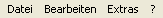
Menüs
JAuswertung bietet vier Menüs. Das Menü "Datei" befasst sich mit allen Informationen und Vorgängen zum Laden und Speichern von Dateien. Das Menü "Werkzeuge" enthält die Funktionen, die Sie bei der Verwaltung eines Wettkampfes benötigen. Das Menü Extras enthält weitere Funktionen, die nicht direkt mit der Auswertung von Wettkämpfen zu tun haben. Das Menü "?" enthält weitere Informationen über JAuswertung.
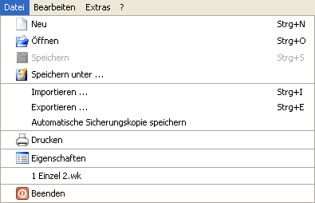
Menü: Datei
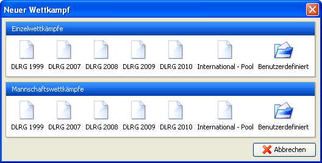
Neuen Wettkampf erstellen
Über den Menüpunkt "Neu" können Sie einen neuen Wettkampf erstellen. Es öffnet sich ein Fenster, wie es in Abbildung "Neuen Wettkampf erstellen" dargestellt ist. Wählen Sie einfach die Art von Wettkampf, die Sie durchführen möchten. Sie haben dabei die Wahl zwischen Einzel- und Mannschaftswettkämpfen. Benutzerdefinierte Wettkämpfe können ebenfalls erstellt werden, dazu können über die Knöpfe "Benutzerdefiniert" mit dem Regelwerkseditor erstellte Dateien geladen werden. Über die Menüpunkte "Öffnen", "Speichern" und "Speichern unter ..." stehen die üblichen Funktionen zur Verfügung.
Sie können verschiedene Daten importieren bzw. exportieren. Ein Assistent begleitet den Vorgang und bietet die zur Verfügung stehenden Möglichkeiten an. Importiert werden können dabei Meldedaten, Mannschaftsmitglieder, Kampfrichter und HLW-Punkte aus Excel- und CSV-Dateien. Exportiert werden können Meldedaten, Lauflisten, HLW-Listen, Kampfrichter, Startkarten, Mannschaftsmitglieder, HLW-Punkte und Ergebnisse in mindestens eins der Formate HMTL, CSV, XML, Excel oder PDF.
Hinweis: Sie können auch alle Informationen, die Sie aus JAuswertung drucken können, als PDF-Datei speichern. Nutzten Sie dazu im Druckbereich die Vorschaufunktion. Während die Vorschau angezeigt wird, steht dort auch ein Knopf "Speichern als PDF" zur Verfügung.
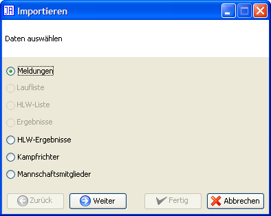
Daten
Details zum Import
Beim Import von Tabellen in JAuswertung müssen einige Bedingungen erfüllt sein. Verwenden Sie zum Import von Meldungen am besten die offiziellen Vorlagen, die Sie auf www.dennismueller.de finden.
Was wird importiert? Enthält eine Tabelle mehr als ein Tabellenblatt, so werden die Daten aller Blätter importiert. Tabellenblätter, die nicht den Ansprüchen genügen werden ignoriert.
Wie kann ich Probleme beim Import vermeiden? Tabellen sollten keine verbundenen Zellen und keine Formeln enthalten. Die erste Zeile einer Tabelle darf nicht leer sein.
Wie muss eine importierbare Tabelle aufgebaut sein? Die erste Zeile der Tabelle wird als Überschrift interpretiert. Dabei werden die folgenden Texte erkannt "S#" und "Startnummer" (für Startnummer), "Name" (bei Einzelwettkämpfen "Vorname" und "Nachname"), "Gliederung", "Altersklasse", "Geschlecht", "Meldepunkte" und "Gemeldete Punkte", "Außer Konkurrenz". Es wird erwartet, dass jede Zeile in der Tabelle genau einem Teilnehmer entspricht. Dabei wird davon ausgegangen, dass z.B. in der Spalte mit dem Titel "Name" die Namen der Mannschaften aufgeführt sind. Die Tabelle darf beliebig viele Spalten enthalten; Spalten deren Titel JAuswertung unbekannt ist, werden einfach ignoriert. Beachten Sie aber, dass die Felder "Name" (bzw. "Vorname" und "Nachname"), "Gliederung", "Altersklasse" und "Geschlecht" Pflichtfelder sind. Fehlt eines dieser Felder, kann JAuswertung die Tabelle nicht importieren.
Hinweis: Es werden nur Excel-Dateien ab der Versionen 97 unterstützt. Dateien älterer Versionen müssen zuerst in einem neueren Format gespeichert werden.
Hinweis: Beachten Sie bitte ebenfalls, dass nach dem Regelwerk in der offenen Altersklasse eine Wahlmöglichkeit bei den Disziplinen besteht. In diesem Fall ist auch die Festlegung der Disziplinen beim Import Pflicht. Wie die Disziplinen festgelegt werden können, ist im nächsten Abschnitt beschrieben.
Welche zusätzlichen Informationen können importiert werden? Darüber hinaus können für die jeweiligen Disziplinen Zeiten gemeldet werden, die bei der Lauflistenerstellung berücksichtigt werden können. Dazu müssen Sie nur für jede Disziplin eine Spalte anlegen, deren Titel der Name der Disziplin ist. Dort können Sie dann die Zeit im Formt "m:ss,00" (also Minuten:Sekunden,hundertstel) eintragen. Nach dem Regelwerk von 2007 darf die Offene Altersklasse ihre Disziplinen wählen. Diese Informationen können ebenfalls importiert werden. Ist in einer Spalte einer Disziplin keine Meldezeit angegeben, so wird der Teilnehmer hier nicht gemeldet. Können Sie keine Zeit angeben genügt ein "+" zur Meldung des Schwimmers.

Daten
Automatisch speichern
Die Option "Automatisch speichern" speichert die aktuelle Datei alle 5 Minuten. Dabei wird der aktuelle Name der Datei um "-autosave" erweitert. Heißt ihr Wettkampf "BezMei06.wk" (".wk" ist die Endung, die von JAuswertung für Wettkämpfe benutzt wird), wird alle 5 Minuten eine Datei unter dem Namen "BezMei06-autosave.wk" gespeichert. Wurde eine Datei neu erstellt und noch nicht gespeichert, ist automatisches Speichern nicht möglich!
Das Drucken ist in JAuswertung über eine der linken Knopfleisten verfügbar. Dies ist notwendigt, da JAuswertung wesentlich mehr Druckmöglichkeiten bietet als die meisten anderen Programme. Da aber ein Menüpunkt "Drucken" an dieser Stelle erwartet wird, ist dieser hier eingefügt, und wechselt auf die entsprechende Druckansicht.
Über diesen Menüpunkt können verschiedene Angaben zum Wettkampf wie z.B. Name, Ort und Datum eingetragen werden, die für ein Protokoll benötigt werden. Einige Angaben wie z.B. der Name des Wettkampfs werden auch im Titel der Ergebnisse aufgeführt. Diese Angaben werden für das Protokoll benötigt.
Die Eingaben der Registerkarten "Wettkampf" und "Veranstaltungsort" enthalten strukturierte Informationen zum Wettkampf. Darüber hinaus werden die Felder "Name", "Ort" und "Datum" auf alle Seiten gedruckt. Die Registerkarte "Informationsseite" enthält ein Feld zur freien Texteingabe. Diese Informationen können über "Informationsseite" gedruckt werden. Für das Deckblatt des Protokolls können Sie über die Registerkarte "Logo" ein Veranstaltungslogo auswählen.
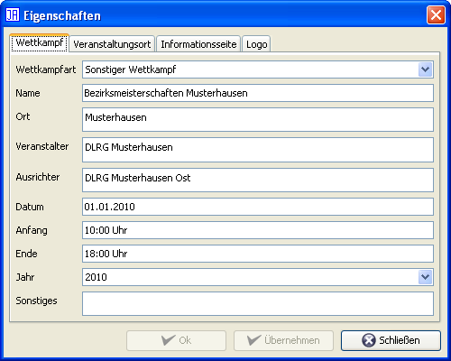
Wettkampf
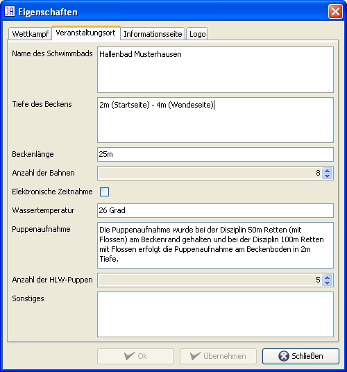
Veranstaltungsort
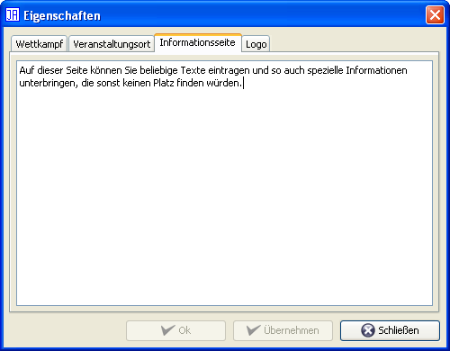
Infoseite
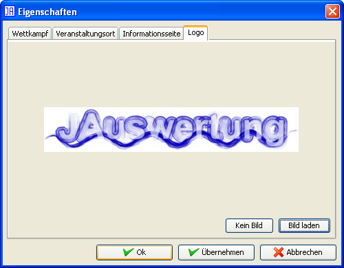
Logo
In der Liste der zuletzt genutzten Dateien, werden die vier letzten geöffneten bzw. gespeicherten Dateien angezeigt. Durch einen Mausklick werden diese direkt geladen.
Über diesen Menüpunkt wir JAuswertung beendet. Dies kann je nach Betriebssystem auch über das "X" in der rechten oberen Ecke des Hauptfensters geschehen. Wurden seit dem letzten Speichern Daten geändert, erfolgt eine Sicherheitsabfrage.
Das Menü "Bearbeiten" enthält die Funktionen, die Sie bei der Verwaltung ihres Wettkampfs unterstützen. Dazu gehört das Erzeugen und Verwalten von Lauf- und HLW-Listen, der Einsatz von Kampfrichtern, die Änderung des Regelwerks, die Strafenliste, fehlende Eingaben und die Kampfrichterverwaltung.

Menü: Bearbeiten
Über den Punkt "Rückgängig" können Sie jeweils die letzte Änderung zurücknehmen. Durch mehrfaches Auswählen dieses Punkts können Sie auch mehrere Schritte zurückgehen. Sollten Sie einmal einen Schritt zu weit zurück gegangen sein, können Sie diesen Schritt über den Menüpunkt "Wiederholen" wieder herstellen. Es ist auch möglich mehrere Schritte wiederherzustellen.

Meldezeiten
Meldezeiten werden zur gerechteren Einteilung der Läufe benötigt. Wenn Sie also eine Laufliste mit der Option "Nach Meldezeiten sortieren" erstellen wollen, sollten Sie zuerst hier die entsprechenden Meldezeiten eingeben.
Im oberen Bereich des Fensters können Sie die Altersklasse und das Geschlecht für die Eingabe wählen. Im Hauptbereich werden dann alle Schwimmer dieser Auswahl mit den Meldezeiten jeder Disziplin angezeigt. Sind für Schwimmer einzelne Diszplinen deaktiviert, so nimmt der Schwimmer an diesen Disziplinen nicht teil.
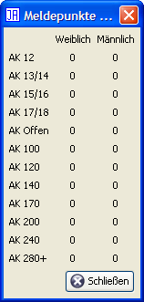
Meldepunkte schätzen
Über diesen Menüpunkt können Sie Meldepunkte auf der Basis gemeldeter Zeiten schätzen lassen. Dabei wird allen Schwimmern die Punktzahl zugewiesen, die sie mit diesen Zeiten (ohne HLW und Punkteabzüge) erhalten würden.
Hinweis: Sind bereits Meldepunkte gesetzt, werden diese beibehalten.
Die Zulassung hat 2 Unterpunkte: Neu, Nicht qualifizierte entfernen. Mit dem ersten Punkt kann über einen Assistenten eine neue Zulassung durchgeführt werden. Schwimmer, die bereits als gesetzt markiert werden, werden dadurch nicht verändert. Die restlichen Schwimmer werden auf der Basis der Einstellungen als Direktqualifiziert (z.B. für Landesmeister), Punkte (Nachrücker nach Punkten) und nicht qualifiziert gesetzt.
Wird keine Zulassung durchgeführt, sind alle Schwimmer auf "offen" gesetzt. Die Zulassung kann auch für jeden Schwimmer einzeln gesetzt werden. Dafür steht die Funktion "Bearbeiten" z.B. unter Meldungen zur Verfügung.
Über diesen Menüpunkt können Lauflisten erstellt und verwaltet werden. Dazu stehen Ihnen die folgenden Funktionen zur Verfügung:
Der Unterpunkt "Neu" erstellt automatisch eine neue Liste, in der alle Teilnehmer bzw. Teams berücksichtigt werden. Sie werden durch einen Assistenten durch die Erstellung der Liste begleitet und können die Einstellungen ihren Wünschen anpassen:
Schritt 1: Allgemeine Einstellungen
Festlegung der Anzahl der Bahnen des Schwimmbeckens
Nummer des ersten Laufs
Schritt 2: Art der Erstellung
Hier können Sie wählen, ob sie den Assistenten fortsetzen und eine Laufliste automatisch erstellen wollen oder ob Sie eine leere Laufliste erstellen wollen, in der Sie die Läufe selbst einteilen.
Schritt 3: Bahnenauswahl
Hier können Sie für jede Disziplin festlegen, welche Bahnen genutzt werden sollen. In einigen Schwimmbädern kann es aus baulichen Gründen nötig sein, z.B. bei der Disziplin "50m Retten" wegen ungleicher Beckentiefe auf eine Bahn zu verzichten.
Schritt 4: Reihenfolge der Altersklassen und Disziplinen
In diesem Schritt können Sie festlegen welche Disziplinen und welche Altersklassen in welcher Reihenfolge geschwommen werden sollen. Die Standardreihenfolge soll allen Schwimmern einen möglichst großen Abstand zwischen zwei Starts ermöglichen.
Schritt 5: Sortierung der Schwimmer je Altersklasse
Dieser Schritt legt fest, wie die Schwimmer innerhalb einer Altersklasse auf die Läufe verteilt werden. Die Punkte "Zufällig", "Nach Gliederungen sortieren" und "Gleiche Gliederung auf unterschiedliche Läufe verteilen" bieten sich vor allem für Freundschaftswettkämpfe an, während "Nach gemeldeten Punkten sortieren", "Nach gemeldeten Zeiten sortieren (je Disziplin)" und "Nach Regelwerk sortieren" besonders für Meisterschaften geeignet sind.
Schritt 6: Meldepunkte
Hinweis: Dieser Schritt wird nur angezeigt, wenn in Schritt 5 "Nach gemeldeten Punkten sortieren" ausgewählt wurde.
In diesem Schritt kann festgelegt werden, nach welchen Meldepunkten die Einteilung erfolgen soll.
Schritt 7: Optionen
Durch "Fast leere Läufe am Ende von Altersklassen vermeiden" werden fast leere "langsamste" Läufe durch Schwimmer aus dem "zweitlangsamsten" Lauf aufgefüllt. Beispiel: Gäbe es also z.B. einen Lauf mit 1 Schwimmer und der nächst bessere Lauf würde 5 Schwimmer enthalten, so werden zwei Läufe mit 3 Schwimmern erstellt.
Über "Gemischte Läufe" wird ggf. der letzte männliche und weibliche Lauf zusammengelegt, sofern dadurch ein Lauf gespart werden kann.
"Wenn möglich aufeinanderfolgende Läufe zusammenfassen" überprüft nach der eigentlichen Erstellung der Liste, ob Läufe, die aufeinanderfolgen, zusammengefasst werden können. Dabei wird nicht berücksichtigt, ob die Läufe die gleiche Disziplin oder Altersklasse enthalten.
"Bahnen rotieren" ermöglicht es eine faierere Laufliste zu erstellen, da in jedem Lauf eine andere Bahn genutzt wird.
"Normale Teilnehmer und Teilnehmer außer Konkurrenz in unterschiedlichen Läufen" spricht eigentlich für sich selbst und trennt die entsprechend markierten Teilnehmer. Diese Option hat keinen Einfluss auf Option 2. Darüber hinaus werden die Teilnehmer nicht strikt getrennt, sondern nur entsprechend sortiert. Ist der letzte Lauf der Teilnehmer, die nicht außer Konkurrenz starten, nicht voll besetzt, wird er durch die ersten außer Konkurrenz Startenden aufgefüllt.
Hinweis 1: Bei der Sortieroption "Nach Regelwerk sortieren" werden die Altersklassen nach der jeweiligen Vorgabe des eingegebenen Regelwerks durchgeführt. Diese können Sie im Regelwerkseditor ändern.
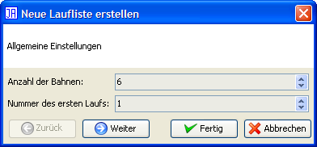
Schritt 1: Allgemeine Einstellungen

Schritt 2: Laufliste erstellen oder nur eine leere anlegen?
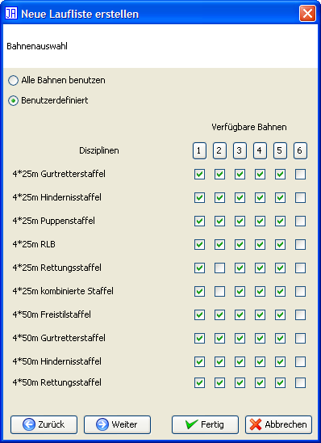
Schritt 3: Benutzbare Bahnen wählen
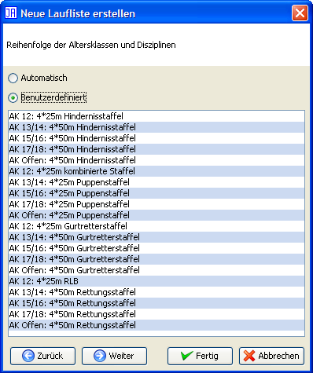
Schritt 4: Reihenfolge der Disziplinen wählen

Schritt 5: Sortierung festlegen

Schritt 6: Weitere Optionen
Über den Unterpunkt "Bearbeiten" wird die aktuelle Liste angezeigt. Wurden seit der Erstellung der Liste weitere Teilnehmer oder Mannschaften eingetragen, erscheinen diese im rechten Teil - der sogenannten "Warteliste". Den Hauptteil des Fensters nimmt die eigentliche Liste ein, die in Tabellenform dargestellt ist. Die erste Spalte ist mit "#" beschriftet und enthält die Laufnummer. Die Spalten "AK" und "Disziplin" enthalten den Namen der entsprechenden Altersklasse bzw. der geschwommenen Disziplin. Dabei gilt für die Altersklasse, dass hier der Name der Altersklasse inklusive Geschlecht angezeigt wird. Starten die Schwimmer einer Altersklasse in einem Lauf gemischt, so steht hier der Name der Altersklasse gefolgt von "gemischt". Starten in einem Lauf unterschiedliche Altersklassen steht hier nur "Gemischt". Entsprechend gilt dies für die Spalte "Disziplin", sobald unterschiedliche Disziplinen geschwommen werden, steht hier "Gemischt". Die restlichen Spalten stehen für die Nummer der Bahn und dort sind die entsprechenden Teilnehmer bzw. Mannschaften eingetragen.
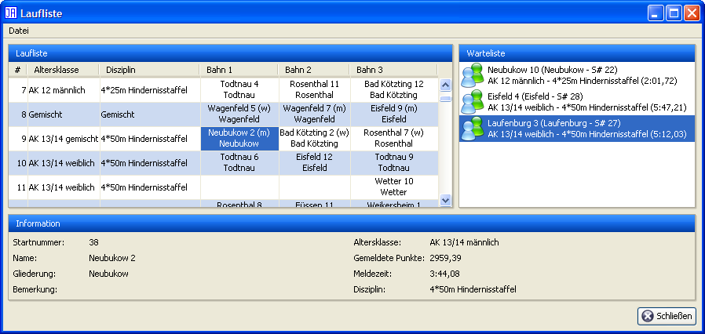
Laufliste
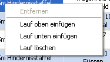
Laufliste: Rechtsklick
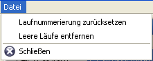
Menü
Durch einen einfachen Klick auf einen Teilnehmer werden dessen Informationen am unteren Fensterrand dargestellt. Durch einen Doppelklick auf einen Schwimmer in der Liste wird er auf die Warteliste gesetzt und aus der Liste entfernt. Durch einen Doppelklick auf ein leeres Feld der Liste wird der ausgewählte Teilnehmer der Warteliste in die Liste eingetragen und aus der Warteliste entfernt. Sie können die Listen wahlweise auch mittels Drag'n'Drop verändern. Ziehen Sie hierzu den Teilnehmer bzw. die Mannschaft einfach an die gewünschte Stelle. Durch einen rechten Mausklick auf ein Feld in der Laufliste öffnet sich ein Kontextmenü. Wenn Sie auf einen Schwimmer geklickt haben, können Sie diesen über den Punkt "Entfernen" aus der Laufliste entfernen. Über die restlichen Menüpunkte können Sie einen Lauf oberhalb bzw. unterhalb des aktuellen Laufs einfügen oder den aktuellen Lauf löschen.
Über den Unterpunkt "Anzeigen" kann die aktuelle Lauf- bzw. HLW-Liste angezeigt werden. Der Aufbau des Fensters entspricht dem bei der Bearbeitung; es fehlt lediglich die Warteliste und eine Bearbeitung ist nicht möglich. So können Sie sicherstellen, dass Sie nicht versehentlich die Laufliste modifizieren.
Über den Unterpunkt "Sperren" kann die Bearbeitung und die Neuerstellung unterbunden werden. Damit ist eine versehentliche Änderung der Listen nicht möglich.
Über diesen Menüpunkt können Lauflisten erstellt und verwaltet werden. Dazu stehen Ihnen die folgenden Funktionen zur Verfügung:
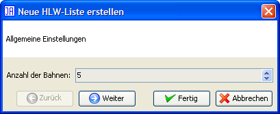
Schritt 1: Anzahl der HLW-Puppen
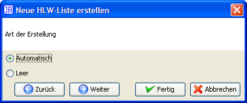
Schritt 2: Erstellung oder Vorbereitung
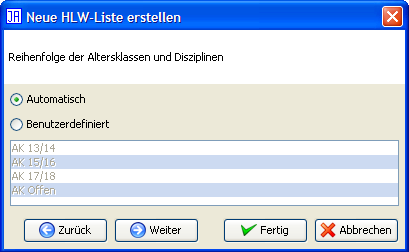
Schritt 3: Reihenfolge der Altersklassen
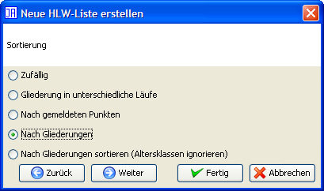
Schritt 4: Sortierung der Teilnehmer
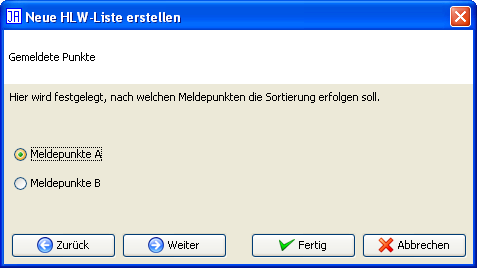
Schritt 5: Meldepunkte
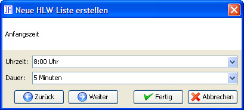
Schritt 6: Uhrzeit
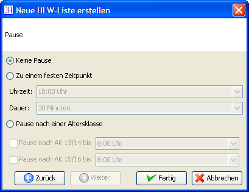
Schritt 7: Pause

Schritt 8: Optionen
Die Erstellung einer HLW-Liste wird über "Neu" durchgeführt. Dabei geben Sie zuerst die Anzahl der HLW-Puppen an. Im zweiten Schritt können Sie auswählen, ob Sie die HLW-Liste von Hand erstellen möchten (Dann ist die Erstellung nach diesem Schritt abgeschlossen), oder ob Sie die Liste von JAuswertung erstellen lassen wollen. Im dritten Schritt legen Sie die Reihenfolge der Altersklassen fest. Der vierte Schritt gibt die Reihenfolge der Teilnehmer bzw. Mannschaften innerhalb einer Alterklasse an. Im fünften Schritt legen Sie die Anfangsuhrzeit der HLW sowie die Dauer einer HLW fest. Im letzten Schritt können Sie noch Pause bei der HLW einplanen. Diese können Sie wahlweise zu einem festen Zeitpunkt oder nach jeder Altersklasse angeben.
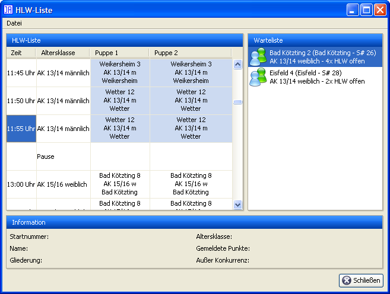
HLW-Liste

HLW-Liste: Rechtsklick
Sie können bestehende HLW-Listen bearbeiten, so dass Sie auch automatisch erstellte Listen Ihren Wünschen anpassen und nachgemeldete Starter einfügen können. Dabei sehen Sie in dem Fenster links die aktuelle HLW-Liste und rechts in der "Warteliste" die Starter, die noch zur HLW eingeteilt werden müssen. Die Tabelle der HLW-Liste enthält dabei die Spalten "Zeit" für den Zeitpunkt an dem die HLW durchzuführen ist sowie die Altersklasse der Starter. Gehen gemischte Geschlechter zu einer Zeit an der Start steht hier z.B. "AK 13/14 gemischt". Starten unterschiedliche Altersklassen zum gleichen Zeitpunkte so steht in dieser Spalte "Gemischt". Die restlichen Spalten stehen für die Nummer der Bahn bzw. HLW-Puppe und dort sind die entsprechenden Teilnehmer bzw. Mannschaften eingetragen. Eine Besonderheit stellt hier die Mannschafts-HLW dar, da hier jede Mannschaft viermal antreten muss. Einzelne Teilnehmer bzw. Mannschaften können Sie per Drag'n'Drop verschieben und so an die gewünschte Position bringen. Pausen und Läufe können Sie über einen Rechtsklick-Menü hinzufügen bzw. entfernen.
Die Funktion "Anzeigen" bietet ausschließlich die Anzeige der HLW-Liste ohne die Bearbeitungsfunktionen. Über den Punkte "Sperren" können Sie die HLW-Liste vor Bearbeitungen schützen. So kann diese nicht versehentlich geändert werden.
Die Laufpräsentation dient zur Darstellung der Informationen über den aktuellen sowie dem nächsten Lauf z.B. über einen Videobeamer. Die Anzeige wechselt zeitgesteuert zwischen der aktuellen Laufnummer und dem nächsten Lauf.
Folgende Tasten können zum Wechsel zum nächsten Lauf genutzt werden: Pfeil rechts, Pfeil unten, Leertaste, Enter
Folgende Tasten können zum Wechsel zum vorherigen Lauf genutzt werden: Pfeil links, Pfeil oben, Backspace.
Über diesen Menüpunkt können Sie die Altersklassen ihres Wettkampfs bearbeiten. Beachten Sie aber, dass Sie während eines Wettkampfs keine Altersklassen erstellen bzw. löschen können, und dass die Anzahl der Disziplinen nicht geändert werden kann. Darüber hinaus können Sie weitere Einstellungen zum Regelwerk durchführen. Weitere Informationen zum Regelwerkseditor finden Sie im Kapitel Regelwerkseditor.
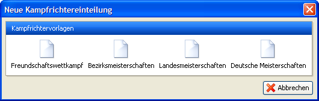
Kampfrichtervorgabe wählen

Kampfrichterverwaltung

Menü
Mit der Kampfrichterverwaltung können Kampfrichter auf die verschiedenen Positionen eingeteilt werden. Die Positionen entsprechen denen des aktuellen DLRG-Regelwerks. Sie können je nach Wettkampf die Anforderungen an die Kampfrichter festlegen. So gelten z.B. für Bezirksmeisterschaften geringere Anforderungen als für die Landesmeisterschaften. Die Einteilung der Kampfrichter kann einzeln gedruckt werden, ist aber auch Bestandteil des Protokolls.
Tipp: Sie können die Einteilung der Kampfrichter auch speichern und in einem anderen Wettkampf laden. Damit müssen Sie die Kampfrichter nicht zweimal eintippen, wenn sich die Kampfrichter z.B. zwischen Einzel- und Mannschaftsmeisterschaften nicht ändern.
Über diesen Menüpunkt können Sie festlgen welche Schwimmer einer Startpasskontrolle unterzogen werden sollen. Dabei steht Ihnen ein Assistent zur Verfügung, der Sie bei der Auslosung der Startunterlagenkontrolle unterstützt, so dass Sie die Auswahl nicht manuell vornehmen müssen. Diese Auswahl können Sie aber bei Bedarf jeder Zeit Ihren Wünschen anpassen.
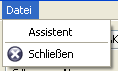
Startunterlagenkontrolle
Menü
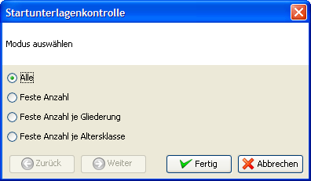
Assistent
Die Auslosung der Dopingkontrolle ist identisch zur Startpasskontrolle.

Elektronische Zeitnahme
Die Funktion "Elektronische Zeitnahme" wurde für die "Deutschen Meisterschaften im Rettungsswimmen" hinzugefügt und ermöglicht die Übernahme von Zeiten aus einer elektronischen Zeitmessanlage. Wenn JAuswertung mit einer Zeitmessanlage verbunden ist, kann über den Knopf "Aktualisieren" das aktuelle Ergebnis abgerufen werden. Im Bereich Übersicht kann aus den Läufen von JAuswertung ausgewählt werden. JAuswertung versucht dabei den passenden Lauf der elektronischen Zeitmessung im rechten Bereich zu ermitteln und anzuzeigen. Mit dem Knopf "Eintragen" werden die Zeiten aus der elektronischen Zeitmessung übernommen.
Die Verbindung mit einer elektronischen Zeitnahme erfolgt über ein Netzwerk. Die benötigten Einstellungen stehen im Menüpunkt Extras → Optionen zur Verfügung.
Hinweis: Ggf. stellt die Zeitnahme mehrere Zeiten pro Bahn zur Verfügung. Aus diesen kann die gewünschte Zeit ausgewählt werden.
Der Zielrichterentscheid ist eine Besonderheit, die mit dem DLRG-Regelwerk von 2008 aus dem DSV-Regelwerk übernommen wurde. Diese tritt dann ein, wenn in einem Lauf bei mehreren Schwimmer der gleichen Altersklasse die manuell gestoppte Zeit dem Zieleinlauf widerspricht (Bei vollautomatischer Zeitnahme tritt ein Zielrichterentscheid also nicht ein). In diesem Fall erhalten alle Schwimmer die gleiche Zeit. Die Platzierung in dieser Disziplin wird entsprechend dem Zieleinlauf festgelegt, so dass die Schwimmer trotz gleicher Zeit unterschiedliche Plätze einnehmen. Dies gilt jedoch nur, wenn nicht in einem anderen Lauf ein weiterer Schwimmer der gleichen Altersklasse die gleiche Zeit geschwommen hat.

Zielrichterentscheid
JAuswertung geht davon aus, dass die im Falle eine Zielrichterentscheids betroffenen Schwimmer die gleiche Zeit erhalten und entsprechend eingegeben werden. Wenn Sie also einen Zielrichterentscheid hinzufügen möchten, listet Ihnen JAuswertung die in Frage kommenden Läufe mit den entsprechenden Teilnehmern auf. Aus dieser Liste können Sie anschließend den richtigen auswählen.
Anmerkung: Sollte Ihr Zielrichterentscheid nicht aufgeführt werden, so liegt wahrscheinlich ein Eingabefehler vor.
In der Liste der aufgeführten ausgewählten Zielrichterentscheide werden die Schwimmer zuerst anhand ihrer Bahnen sortiert aufgelistet. Sie können die Reihenfolge der Schwimmer per Drag'n'Drop ändern.
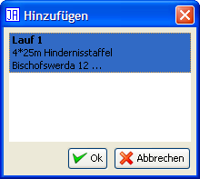
Zielrichterentscheid hinzufügen

Zielrichterentscheide korrigieren
Die Strafenliste zeigt alle vergebenen Strafen des aktuellen Wettkampfs nach Läufen sortiert an. Hier haben Sie die Möglichkeit, diese noch einmal auf Richtigkeit zu überprüfen und ggf. zu korrigieren.
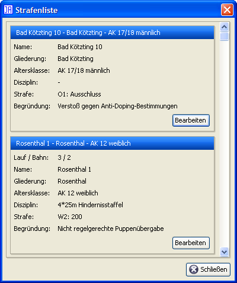
Strafenliste
Tipp: Da mit dem Regelwerk 2007 Strafen nicht mehr durchgesagt werden müssen, kann es sinnvoll sein, die Strafen noch einmal einzeln auszuhängen. Zu diesem Zweck können Sie die Strafenliste im Druckbereich ausdrucken.

Daten prüfen: Übersicht
Über diesem Menüpunkt öffnen Sie ein Fenster, dass ihnen Informationen zum aktuellen Stand der Eingabe darstellt. Sie ershalten eine Übersicht über fehlerhafte bzw. korrekte Einfaben. Dabei müssen Sie jedoch beachten, dass diese Angaben auf Erfahrungswerten basieren und in vielen Fällen auf Fehler in der Eingabe hinweisen. Es wird damit nicht garantiert, dass bestimmte Eingaben mit absoluter Sicherheit richtig oder falsch sind. Es ist aber i.d.R. gut, sich markierte Punkte genauer anzusehen.
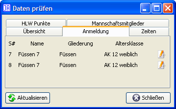
Daten prüfen: Anmeldung

Daten prüfen: Zeiten
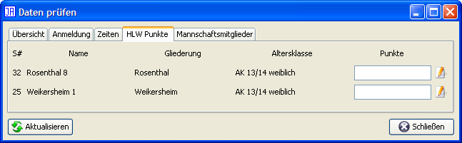
Daten prüfen: HLW Punkte
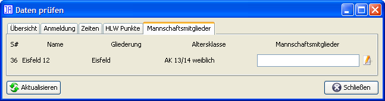
Daten prüfen: Mannschaftsmitglieder
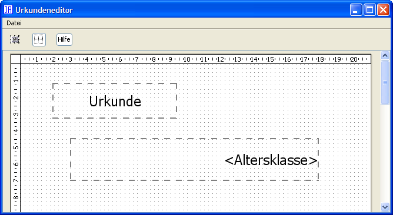
Urkundeneditor
Mit dem Urkundeneditor können Sie bestehende Urkunde bedrucken lassen, so dass Sie diese nicht von Hand ausfüllen müssen. Dazu können Sie einzelne Textfelder erstellen, ausrichten und deren Schriftart ändern. Über das normale Druckmenü können dann die Urkunden auch Altersklassenweise gedruckt werden.
Folgende Texte in den Textfeldern werden automatisch ersetzt:
<Name>
<Gliederung>
<Altersklasse>
<Geschlecht>
<Punkte>
<Platz>
<Wertung>
<Mitglieder>
<Mitglieder2>
Beachten Sie bitte die < und > um jedes Wort. Der Satz "<Name> belegte in der Altersklasse <Altersklasse> <Geschlecht> den <Platz>. Platz" würde also z.B. auf der gedruckten Urkunde wie folgt aussehen "Musterstadt 1 belegte in der Altersklasse AK 12 weiblich den 3. Platz". Die Texte <Mitglieder> und <Mitglieder2> werden bei Mannschaftswettkämpfen durch die Mannschaftsmitglieder ersetzt. <Mitglieder> erstellt dabei eine kommagetrennte Liste, <Mitglieder2> schreibt jedes Mitglied in eine eigene Zeile. Durch <Wertung> wird bei der Disziplinenwertung der Name der Disziplin eingesetzt; bei der Mehrkampfwertung wird hier "Mehrkampf" eingetragen.
Über diesen Menüpunkt gelangen Sie in die Verwaltung der Ausgabefilter. Ausgabefilter ermöglichen es mehrere Wettkämpfe in Einem zu verwalten und trotzdem getrennte Ergebnisse, Protokolle und Meldelisten drucken und exportieren zu können. Auf der linken Seite des Fensters sehen Sie die zur Zeit eingerichteten Filter. Hier können Sie einzelne Filter hinzugefügen bzw. entfernen. Beachten Sie, dass der Standardfilter weder entfernt noch geändert werden kann. Er enthält immer alle Teilnehmer bzw. Mannschaften. Auf der rechten Seite sehen Sie den zur Zeit ausgewählten Ausgabefilter. Hier können Sie den Namen des Filters ändern, wobei leere Namen nicht erlaubt sind. Unter dem Namen finden Sie eine Liste der Gliederungen, die zu diesem Filter gehören. Mit den beiden darunterliegenden Knöpfen können Sie weitere Gliederungen zu diesem Filter hinzufügen bzw. entfernen.

Ausgabefilter
Das Menü "Extras" enthält die Menüpunkte Strafenkatalog und Optionen.
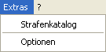
Menü: Extras
Der Strafenkatalog enthält eine Liste aller Strafen des Regelwerks, die in Kapitel und Paragraphen unterteilt sind. Werden während eines Wettkampfs Strafen vergeben und ein eigener Text eingetragen, werden diese "neuen" Strafen im Kapitel "Sonstiges" aufgeführt. Dies ist sinnvoll, da im Regelwerk z.B. Strafen für fehlerhafte Wechsel vorgesehen sind. Während eines Wettkampfs ist aber auch der Vermerk "beim Wechsel vom 3. auf den 4. Schwimmer" sinnvoll. Wurde dies bei einer Strafe einmal eingetragen, kann diese beim nächsten Auftreten direkt ausgewählt werden.
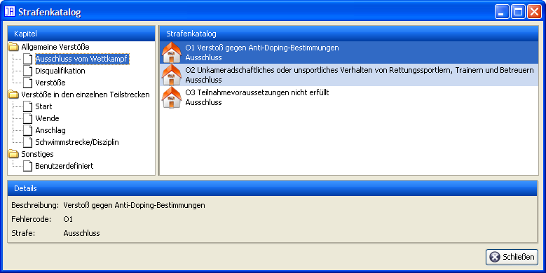
Strafenkatalog
Zur Unterstützung ist jeder Strafe ein Symbol zugeordnet:
Grüner Haken: Keine Strafe (0 Strafpunkte)
Blitz in gelbem Kreis: Strafpunkte
Roter Kreis mit weißem X: Disqualifikation
Fußspuren: Nicht angetreten
Haus: Ausschluss
Anmerkung: Die Regelwerke für Mannschaftswettkämpfe enthalten erweiterte Fehlercodes. Dabei wird neben der Strafe auch die Nummer des Verursachers bzw. des Wechsels angegeben. Z.B. kann für falsches Schleppen einer Puppe P2-3 gewählt werden, so dass direkt ablesbar ist, dass der dritte Schwimmer die Strafe P2 verursacht hat. Diese Erweiterung ist jedoch im Regelwerk so nicht vorgesehen.

Optionen
Über den Menüpunkt "Optionen" können Sie ein Fenster öffnen, in dem sich weitere Einstellungen vornehmen lassen. Das Fenster enthält die Registerkarten "Allgemein", "Anzeige", "HTTP-Server", "Sicherung", "CSV", "Drucken", "Druckschrift", "Elektronische Zeitnahme" und "Werbung".
Über "Allgemein" können Sie einstellen, welche Art von Wettkampf also ein Einzel- bzw. Mannschaftswettkampf nach aktuellem Regelwerk beim Start erstellt werden soll. Die zweite Option legt fest, ob die Oberfläche "geteilt" sein soll. Geteilt ist die Standardeinstellung und bedeutet, dass Sie die Ergebnisse jederzeit im unteren Bereich des Fensters sehen können. Sollten Sie jedoch eine niedrige Auflösung oder größere Schriftarten nutzen, kann es sein, dass der Platz auf dem Bildschirm zu eng wird. Schalten Sie dann die geteilte Oberfläche aus, und die Ergebnisse erreichen Sie ab dem nächsten Start von JAuswertung über ein Icon an der linken Seite. Die dritte Einstellungsmöglichkeit betrifft das Drucken von Strafpunkten, wenn Sie diese Option aktivieren, wird automatisch bei jeder vergebenen Strafe ein Strafenlaufzettel mit allen nötigen Daten gedruckt. Dies ist vor allem bei Freundschaftswettkämpfen sinnvoll, wenn der Protokollführer mehrere Funktionen im Kampfgericht erfüllt. Die letzte Option betrifft die Warnung bei der Eingabe von sehr hohen Zeiten. Da im Normalfall nur Zeiten geschwommen werden, die nicht höher sind als 5 * Rec-Wert der aktuellen Disziplin, handelt es sich hier meistens um Tippfehler. Diese können so vermieden werden.

Anzeige
Im Bereich "Anzeige" kann die geteilte Ansicht gewählt werden. Dabei wird das Fenster in einen oberen und einen unteren Bereich unterteilt. Der obere enthält die Eingabefunktionen und der untere die Punkte Ergebniss und Drucken. Dies ist jedoch nur bei hohen Auflösungen sinnvoll. Daher wird bei niedrigen Auflösungen die geteilte Oberfläche nicht automatisch gewählt. Für diese Einstellung muss JAuswertung neu gestartet werden. Der zweite Punkt beeinflusst die Ausrichtunge von Texten in Lauf- und HLW-Listen. Mit dem dritten Punkt kann JAuswertung mitgeteilt werden, dass nach Möglichkeit redundante Informationen vermieden werden, um Platz auf den Ausdrucken zu sparen.

Sicherung
Über den Bereich "Sicherung" können Sie eine automatische Sicherung anlegen lassen. Diese unterscheidet sich von der Funktion "Datei" → "Automatisch speichern" dadurch, dass den Dateinamen die aktuelle Uhrzeit hinzugefügt wird. Dadurch existieren Backups mit denen die einzelnen Änderungen im Wettkampf nachvollzogen werden können.

CSV
Über die Registerkarte "CSV" können Einstellungen zum CSV-Export und -Import vorgenommen werden. Diese beziehen sich auf die Trennzeichen, die beim CSV-Export/-Import berücksichtigt werden. In normalen CSV-Dateien werden "," als Trennzeichen benutzt. Microsoft Excel nutzt aber die aktuellen Spracheinstellungen zum Export und Import. Dadurch werden Zahlen mit "," getrennt z.B. "123,4" und das Trennzeichen ";" genutzt. Je nachdem mit welchen Programmen Sie arbeiten, müssen Sie diese Option entsprechend wählen.
Anmerkung: Auf Windows-Systemen wird automatisch die zu Excel kompatible Version gewählt. Auf allen anderen Systemen die korrekte CSV-Darstellung.

Elektronische Zeitnahme
Die Verbindung von JAuswertung mit einer elektronischen Zeitmessanlage erfolgt über ein einfaches Netzwerkprotokoll. Für die Zeitmessanlage "Ares 21" von "OMEGA Watches" steht eine Implementierung Namens "AlphaServer" zur Verfügung. Als Server müssen Sie die Adresse des Rechners angeben, auf dem die Software läuft.
Hinweis: Die Software "AlphaServer" ist ebenfalls OpenSource und damit kostenlos. Die grafische Benutzeroberfläche ist jedoch noch nicht offiziell freigegeben. Genauere Informationen zu dieser Software können unter info@dennismueller.de nachgefragt werden.

Werbung
JAuswertung unterstützt das Einblenden von Werbebannern unter- bzw. oberhalb verschiedener Ausdrucke. Diese Einstellung wirkt sich nur auf Ausdrucke aus, die im Allgemeinen vor einem Wettkampf verschickt bzw. während eines Wettkampfs ausgehängt werden. Ergebnisse können so z.B. den Logos von Sponsoren versehen werden.
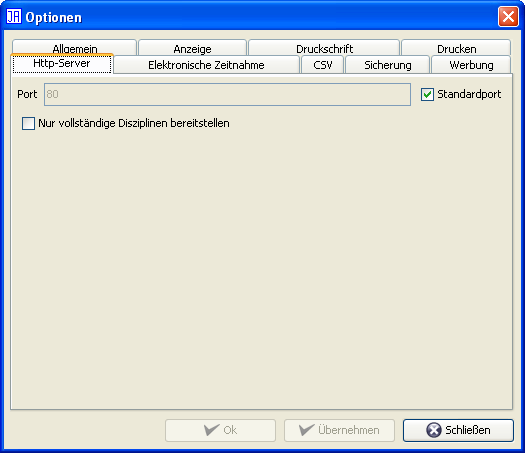
HTTP-Server
Über die Registerkarte "HTTP-Server" können Sie den integrierten HTTP-Server von JAuswertung einstellen. Zur Zeit können Sie den Port für den HTTP-Server ändern. Normalerweise sollten Sie den Standardport nutzen. Unter Linux kann es notwendig sein, den Port auf einen Wert über 1024 zu ändern, da die unteren Ports für Benutzer gesperrt sind. Beachten Sie aber, dass sich damit der Aufruf in ihrem Browser ändert. Der HTTP-Server kann normalerweise von ihrem Rechner aus über die URL "http:localhost/index.html" angesprochen werden. Wenn Sie den Port auf z.B. 8080 ändern, sieht die URL wie folgt aus: "http:localhost:8080/index.html". Den Port für den HTTP-Server können Sie nur ändern, wenn der HTTP-Server nicht gestartet ist.
Hinweis: Der eigentliche Start des HTTP-Servers erfolgt über die Weltkugel in der oberen Knopfleiste. Mit dem HTTP-Server können Sie, wenn Sie mehrere Rechner vernetzen, direkt auf die Daten von JAuswertung zugreifen, ohne den Auswerter stören zu müssen. Beachten Sie aber, dass jede Anfrage Rechenzeit benötigt und den Rechner des Auswerters damit zusätzlich belastet. Dies gilt vor allem für den Download von PDF-Dateien. Sie sollten den HTTP-Server nur intern nutzen, da er nicht darauf ausgelegt ist, große Mengen an Daten/Anfragen zu bewältigen.
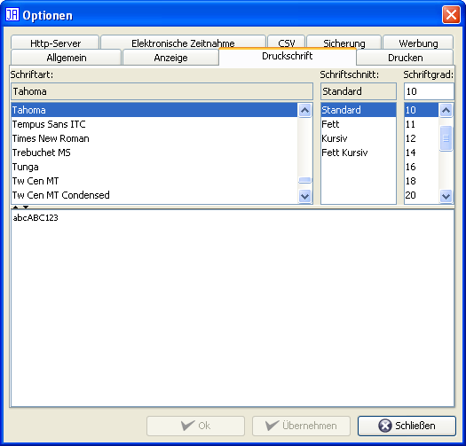
Druckschrift
Über die Registerkarte "Druckschrift" können Sie die Schriftart für Ausdrucke auswählen. Standardmäßig wird die Schriftart "DLRG Univers 55 Roman" gewählt, sofern Sie vorhanden ist.
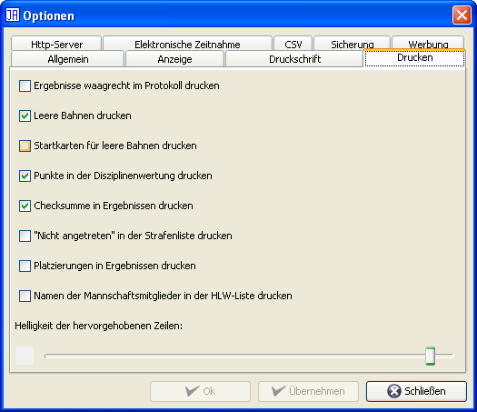
Drucken
Über die Registerkarte "Drucken" können Sie die Orientierung der Ergebnisse im Protokoll einstellen. Standardmäßig werden die Ergebnisse um 90 Grad gedreht gedruckt. Wird also das Protokoll im Hochformat gedruckt, erscheinen die Ergebnisse im Querformat. Bei dieser Einstellung werden die Ergebnisse in den meisten Fällen am besten gedruckt. Wenn Sie die Ergebnisse im Hochformat erhalten wollen, so müssen Sie die Option "Ergebnisse waagrecht drucken" aktivieren.
Sie können festlegen, ob beim Druck von Lauflisten leeren Bahnen mitgedruckt werden ("Leere Bahnen drucken"). Zusätzlich können Sie festlegen, ob beim Druck von Startkarten auch für in einem Lauf nicht genutzte Bahnen Startkarten gedruckt werden sollen.
Bei der Disziplinenwertung ist es Geschacksache, ob die Punkte mitgedruckt werden sollen oder nicht ("Punkte bei der Disziplinenwertung drucken"). Zur einfacheren Unterscheidung von Ergebnissen unterstützt JAuswertung Checksummen, mit denen festgestellt werden kann, ob zwei Ergebnisse unterschiedlich sind. Diese Checksummen können auf jedes Ergebnis gedruckt werden ("Checksummen in Ergebnissen drucken"). Sind die Checksummen unterschiedlich, so sind auch die Ergebnisse unterschiedlich. Wenn die Checksummen gleich sind, ist die Wahrscheinlichkeit sehr hoch, dass die Ergebnisse gleich sind. In seltenen Fällen kann es jedoch vorkommen, dass zwei Ergebnisse mit gleichen Checksummen unterschiedlich sind. Mit der Option "Nicht angetreten in der Strafenliste drucken" kann festgelegt werden, ob in Ausdrucken der Strafenliste auch "nicht angetretene" Schwimmer berücksichtigt werden. "Platzierungen in Ergebnissen drucken" ermöglicht es zu wählen, ob die Platzierungen in den einzelnen Disziplinen bei der Mehrkampfwertung mitgedruckt werden.
Mit der Option "Namen der Mannschaftsmitglieder in der HLW-Liste drucken" besteht die Möglichkeit zu wählen, ob die Namen der ersten vier Mannschaftsmitglieder in die HLW-Liste gedruckt werden sollen.
Die Stärke von Grautönen ist stark vom eingesetzten Drucker und den Einstellungen im Treiber abhängig. Daher kann die Intensität des Grautons für die Zeilenmarkierung in Tabellen manuell festgelegt werden. Dies geschiet über den Regler unter "Helligkeit der hervorgehobenen Zeilen".
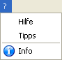
Menü: ?
Dieses Menü bietet Informationen zu JAuswertung. Der Punkt "Hilfe" führt zu dieser Anleitung, der Punkt "Tipps" zeigt ausgewählte Hilfen an und der Punkt "Info", stellt einige Informationen zu JAuswertung dar.

Tipps des Tages

Über JAuswertung

Obere Knopfleiste
Diese Knopfleiste stellt Funktionen zur Verfügung, die weitestgehend über Menüs zu erreichen sind. Die Funktionen entsprechen von Links nach Rechts den folgenden Menüpunkten:
HTTP-Server starten
Cache des HTTP-Servers löschen
Ausgabefilter einstellen
Informationen über den aktuellen Stand der Eingabe
Die Knöpfe zur Bearbeitung der Laufliste und der HLW-Liste nehmen dabei eine Sonderstellung ein. Ist die Sperrung zur Bearbeitung einer Liste aktiviert, so wird der Knopf nicht deaktiviert sondern auf die Funktion "Anzeigen" umgeschaltet.
Mit dem Icon "Weltkugel" können Sie den HTTP-Server aktivieren bzw. wieder deaktivieren. Mit dem HTTP-Server können Sie, wenn Sie mehrere Rechner vernetzen, direkt auf die Daten von JAuswertung zugreifen, ohne den Auswerter stören zu müssen. Beachten Sie aber, dass jede Anfrage Rechenzeit benötigt und den Rechner des Auswerters damit zusätzlich belastet. Dies gilt vor allem für den Download von PDF-Dateien. Sie sollten den HTTP-Server nur intern nutzen, da er nicht darauf ausgelegt ist, große Mengen an Daten/Anfragen zu bewältigen. Beachten Sie bitte, dass der Aufruf der Seiten von der Einstellung des Ports abhängt (siehe Extras → Optionen).
Rechts neben diesen Knöpfen ist die Auswahl von "Ausgabefiltern" möglich. Diese beeinflussen nicht die Eingabe und Auswertung eines Wettkampfs, können aber die Ausgabe einschränken. So ist es möglich die Meisterschaften z.B. mehrerer Bezirke in einem Wettkampf durchzuführen und getrennte Ergebnisse zu erstellen. Die Ausgabefilter beziehen sich nur auf die Ausgabe von Ergebnissen, Protokollen und Meldelisten beim Drucken und beim Export. Ist das Auswahlfeld deaktiviert, sind keine Ausgabefilter definiert. Sie können über den Menüpunkt Extras → Ausgabefilter bearbeiten Ausgabefilter einrichten und ändern. Funktione für Ausgaben z.B. Ausdrucke signalisieren, dass Sie von einem Ausgabefilter beeinflusst werden durch ein Icon "Auge".
Über die linke Knopfleisten können Sie durch die einzelnen Hauptfunktionen von JAuswertung blättern. Je nach ausgewählten Knopf wird die entsprechende Funktion aktiviert. Beachten Sie, dass einige Funktionen nicht immer aktiviert sind. Wenn die gesamte Funktionalität hinter einem Knopf deaktiviert ist, erscheint eine kurze Information darüber, wann diese Funktionalität genutzt werden kann.
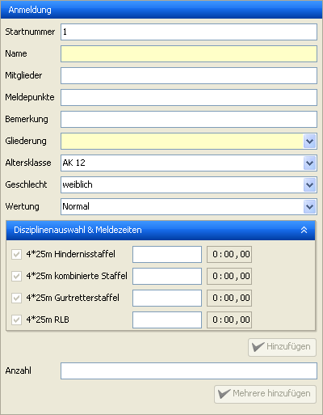
JAuswertung - Schwimmereingabe
Durch einen Klick auf "Eingabe" wird die Eingabe von Teilnehmern oder Mannschaften aktiviert. Je nach aktuellem Wettkampf unterscheidet sich das Aussehen des Fensters, da bei einem Mannschaftswettkampf kein Vor- und Nachname existiert. Gelbe Felder müssen ausgefüllt werden, weiße Felder können freigelassen werden. Wird keine Startnummer eingetragen, so wird automatisch die nächste freie Startnummer für den Schwimmer gewählt.
Bei Mannschaftswettkämpfen können Sie auch mehrere Mannschaften einer Gliederung auf einmal hinzufügen. Geben Sie dazu wie gewohnt die Daten in den oberen Feldern ein. Zusätzlich schreiben Sie dann in das Feld Anzahl die gewünschte Menge an Mannschaften und klicken auf den Hinzufügen-Knopf darunter. Die eingefügten Mannschaften werden automatisch durchnummeriert. Wenn Sie also als Name "Musterort" gewählt haben, werden die Mannschaften "Musterort 1", "Musterort 2", ... genannt. Beachten Sie dabei aber, dass die Mannschaften bis auf den Namen identisch sind. Sie sind also alle in der gleichen Altersklasse und nehmen mit den gleichen Meldezeiten an den gleichen Disziplinen teil.
Hinweis: Wenn Sie neue Teilnehmer oder Mannschaften zu einem Wettkampf hinzufügen, nachdem Sie eine Laufliste erstellt haben, werden diese nicht automatisch in die Laufliste einsortiert. Sie können diese aber über den Lauflisteneditor manuell einsortieren, oder eine neue Laufliste erstellen.
Hier wird die aktuelle Meldeliste dargestellt. Über die Felder im linken Teil kann die Auswahl der dargestellten Teilnehmer bzw. Mannschaften eingeschränkt werden. Dabei sind die Textfelder Filter, dass heißt gibt man z.B. nur den Buchstaben g ein, werden alle Teilnehmer bzw. Mannschaften angezeigt, die den Buchstaben g im Namen tragen. Sind alle Felder leer, werden alle Teilnehmer bzw. Mannschaften dargestellt. Durch einen Rechtsklick auf einen Teilnehmer bzw. eine Mannschaft wird ein Kontextmenü geöffnet, dass das Bearbeiten und Löschen erlaubt, es können hier aber auch Strafen vergeben werden.
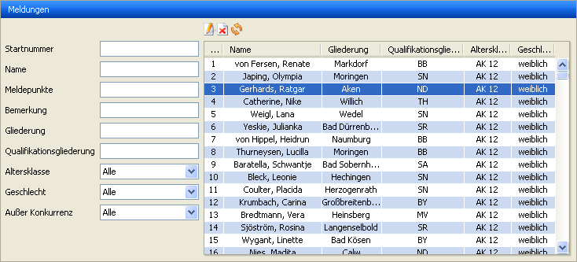
Meldungen
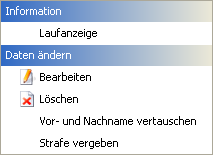
Meldungen: Rechtsklick
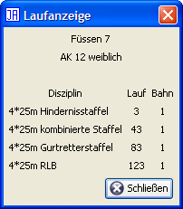
Meldungen: Laufanzeige

Meldungen: Teilnehmer/Mannschaft bearbeiten
Meldungen
Die Fenster zur Bearbeitung von Teilnehmern und Mannschaften unterscheiden sich nur geringfügig und sind im Wesentlichen selbserklärend.
Die Menüpunkte "Disqualifizieren", "Ausschluss" und "Nicht Angetreten" fügen dem ausgewählten Schwimmer bzw. der ausgewählten Mannschaft für alle Disziplinen diese Strafe hinzu. Über den Menüpunkt "Strafe vergeben" können Sie über einen Assistenten eine genauere Strafe vergeben.
Hier können Sie Zeiten einzelner Schwimmer eingeben. Dazu können Sie im Bereich "Auswahl" angeben, welche Disziplin eingetragen werden soll und wie viele Schwimmer gleichzeitig angezeigt werden können. Über den Knopf "weiter" werden alle Felder wieder freigegeben. Diese Knopf verändert keine Daten, er schaft lediglich Platz für neue Eingaben. Im Bereich "Status" werden ggf. Eingabefehler angezeigt, dies soll nur zu ihrer Orientierung dienen.

Zeiteneingabe mit fehlerhaften Angaben
Im Bereich "Zeiteneingabe" findet die eigentlich Eingabe statt. Sie können in einem der Felder unter "Startnummer" die Startnummer eines Schwimmers eingeben. Genauere Angaben zu dem Schwimmer erscheinen dann direkt neben diesem Feld und das Feld unter "Zeiteneingabe" wird aktiviert und Sie können direkt eine Zeit eintragen. Beachten Sie, dass die Eingabe der Zeit direkt durchgeführt wird. Wenn Sie also eine Zeit von 1:23,4 eingeben, wird der entsprechende Schwimmer kurzzeitig eine Zeit von 0:00,1 dann von 0:01,2 dann von 0:12,3 und anschließend die richtige Zeit haben.
Es stehen zur einfacheren Eingabe folgende Tastaturkürzel in den Feldern zur Zeiteneingabe zur Verfügung:
"c" öffnet den Dialog, um eine Strafe nach Fehlercode zu vergeben. Diese Strafe wird zu bestehenden Strafen hinzugefügt.
"d" fügt dem Teilnehmer/der Mannschaft eine "Disqualifikation" hinzu
"n" setzt den Teilnehmer/die Mannschaft auf "Nicht angetreten" (allerdings nur wenn keine Zeit eingegeben wurde)
"p" öffnet ein Fenster zur Eingabe von Strafpunkten. Diese werden zu bestehenden Strafpunkten addiert.
"#" entfernt eingegebene Strafen
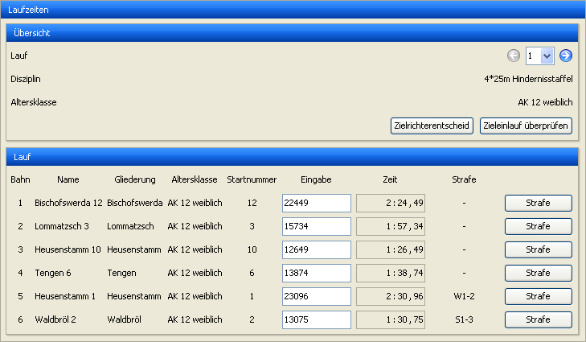
Laufzeiten

Strafenvergabe mittels Code
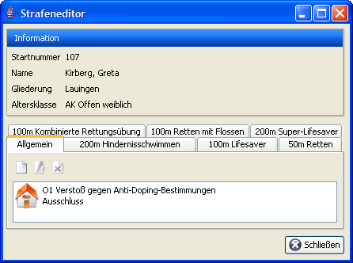
Strafeneditor
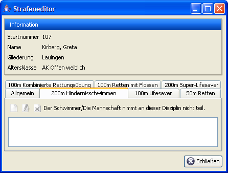
Strafeneditor mit nicht gewählter Disziplin (z.B. in derAK Offen)

Strafenassistent: Code

Strafenassistent: Details
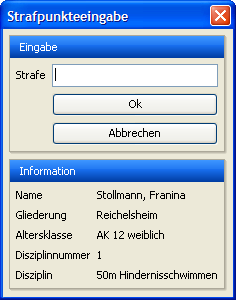
Strafpunkte vergeben
Die Funktionen der "Laufzeiten" stehen nur zur Verfügung wenn auch die Laufliste mit JAuswerung verwaltet wird, ermöglicht aber die höchstmögliche Eingabegeschwindigkeit. Über den Punkt "Lauf" im Bereich "Übersicht" können Sie direkt den Lauf auswählen, den Sie eingeben möchten. Im Rest des Bereichs "Übersicht" werden nähere Informationen zu dem entsprechenden Lauf dargestellt. Im Bereich "Lauf" werden die einzelnen Teilnehmer in der Reihenfolge ihrer Bahnen aufgelistet und Sie können direkt die Zeiten in dieser Reihenfolge eingeben. Die Eingabe der Zeit wird direkt durchgeführt und das Ergebnis aktualisiert.
Es stehen zur einfacheren Eingabe folgende Tastaturkürzel in den Feldern zur Zeiteneingabe zur Verfügung:
"c" öffnet den Dialog, um eine Strafe nach Fehlercode zu vergeben. Diese Strafe wird zu bestehenden Strafen hinzugefügt.
"d" fügt dem Teilnehmer/der Mannschaft eine "Disqualifikation" hinzu
"n" setzt den Teilnehmer/die Mannschaft auf "Nicht angetreten" (allerdings nur wenn keine Zeit eingegeben wurde)
"p" öffnet ein Fenster zur Eingabe von Strafpunkten. Diese werden zu bestehenden Strafpunkten addiert.
"#" entfernt eingegebene Strafen
"z" oder "," zeigen den Zieleinlauf des aktuellen Laufs an
Der Knopf "Zielrichterentscheid" ermöglicht den Zugriff auf eine Funktion, die durch das DLRG-Regelwerk von 2008 eingeführt wurde. Die Beschreibung dazu finden Sie unter jauswertungmenus#zielrichterentscheid
Hinweis 1: Mit den Cursor-Tasten können Sie zwischen den Bahnen und Läufen wechseln.
Hinweis 2: Mit der Taste <Enter> können Sie die Eingabe einer Zeit beenden und zur nächsten Bahn wechseln. Wenn Sie die letzte Zeit eingegeben haben, wird automatisch der Zieleinlauf angezeigt.
Die Eingabe der HLW-Punkte funktioniert nach dem gleichen System wie die Eingabe der Zeiten mit der "Zeiteneingabe". Als Besonderheit ist jedoch anzumerken, dass obwohl ein Teilnehmer bzw. eine Mannschaft gefunden wurde, dass Feld "HLW-Punkte" deaktiviert bleiben kann. Ist dies der Fall ist der Schwimmer in einer Altersklasse, in der keine HLW durchgeführt wird. Dieses Problem wird ebenfalls im Bereich "Status" angezeigt.
Bei der Eingabe von Mannschaften können die Punkte für jeden Schwimmer einzeln eingegeben werden. Dazu muss an die Startnummer ein Buchstabe "a", "b", "c" oder "d" angehängt werden. Der entsprechende Buchstabe wird automatisch auf die HLW-Startkarten gedruckt. Die ersten vier Schwimmer eine Mannschaft sind für die HLW vorgesehen. Der fünfte Schwimmer nimmt nicht an der HLW teil.
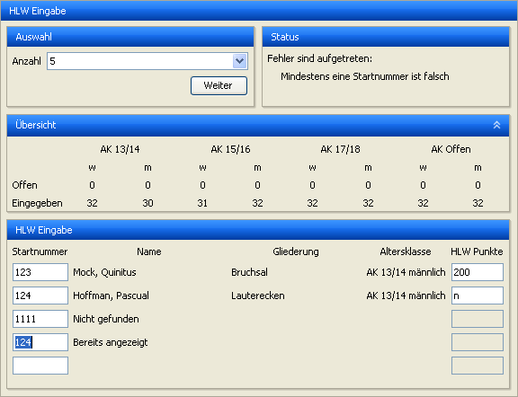
Eingabe von HLW-Punkten
Hinweis: Bei der HLW-Eingabe ermöglichen es die Texte "n" und "n.a." einen Schwimmer als "Nicht angetreten" zu markieren. Mit "d" kann ein Schwimmer als disqualifiziert markiert werden.
JAuswertung druckt auf ausgeüllte HLW-Checklisten und -Startkarten zwei Barcodes. Ein Barcode steht für "Bestanden" und der andere für "Nicht bestanden". Die Barcodes können mit handelsüblichen Barcode-Scanners erkannt werden. Wird ein Barcode für einen Teilnehmer eingescannt, der bestanden hat, leuchtet "200 Punkte" in grün auf. Hat der Teilnehmer nicht bestanden, leuchtet "0 Punkte" in rot auf. Ist der Barcode nicht korrekt, leuchtet "Barcode nicht korrekt" in orange auf. Zusätzlich werden in den ersten beiden Fällen weitere Informationen zu dem erkannten Teilnehmer angezeigt.
Hinweis: Nicht alle Barcode-Scanner simulieren eine Tastatur.
Hinweis: Geeignete Barcode-Scanner (1D-Code-Scanner) simulieren eine Tastatur. Achten Sie deshalb darauf, dass der Fokus auf das Eingabefeld gesetzt ist, wenn Sie einen Barcode scannen.
Hinweis: Sie können diese Funktion auch ohne Barcode-Scanner nutzen. Tippen Sie dazu einfach die Ziffern unter dem Barcode in das Feld "Eingabe" und bestätigen Sie mit <Enter>. Die Barcodes enthalten eine Checksumme und sind daher gegen Vertipper besser als die normale HLW-Eingabe abgesichert.
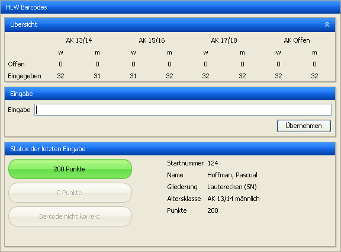
HLW-Barcodes
In diesem Bereich können mit JTeams ausgedruckte Mannschaftsmeldebögen zur Meldung von Mannschaftsmitgliedern eingescannt werden. Der dort abgebildete QR-Code enthält alle Informationen, um die eingegebenen Mannschaftsmitlieder der richtien Mannschafts zuzuordnen.
Hinweis: Nicht alle 2D-Code-Scanner simulieren eine Tastatur.
Hinweis: Geeignete 2D-Code-Scanner simulieren eine Tastatur. Achten Sie deshalb darauf, dass der Fokus auf das Eingabefeld gesetzt ist, wenn Sie einen QR-Code scannen.
Hinweis: Es gibt neben 2D-Code-Scannern auch die Möglichkeit mittels App und Smartphone den Code einzuscannen und per Netzwerk zu übertragen. Dafür muss auf dem genutzen Rechner eine passende Zusatzsoftware des jeweiligen Anbieters installiert werden.

Mannschaftsmitglieder
Die aktuellen Ergebnisse werden im unteren Bereich des Fensters dargestellt. Wenn Sie mehr Platz für andere Teile von JAuswertung benötigen, können Sie über die Optionen die "geteilte Darstellung" deaktivieren, wodurch die Ergebnisse über einen zusätzlichen Knopf in der linken Knopfleiste erreichbar sind und nicht mehr dauerhaft den unteren Fensterbereich belegen.
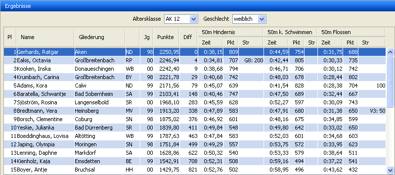
Ergebnisse
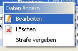
Ergebnisse: Rechtsklick
Durch die Knöpfe im oberen Bereich kann die gewünschte Altersklasse sowie das Geschlecht ausgewählt werden. Die Ansicht der Ergebniss kann auch zur Bearbeitung einzelner Schwimmer bzw. Mannschaften genutzt werden. Über einen Rechtsklick öffnet sich das Popup-Menü, das bereits unter "Meldeliste" beschrieben wurde. Zusätzlich können bestimmte Funktionen per Doppelklick durchgeführt werden. Diese hängen von der Spalte ab, in die geklickt wurde:
Platz, Name, Gliederung, Jahrgang, Punkte, Diff: Öffnet das Fenster zum Bearbeiten eines Schwimmers bzw. einer Mannschaft.
Zeit, Punkte (Je Disziplin): Öffnet ein Fenster zur Eingabe der Zeit für diese Diziplin.
Strafe (Je Disziplin): Öffnet den Assistenten zur Vergabe einer Strafe für diese Disziplin.
HLW: Öffnet ein Fenster zur Eingabe der HLW-Punkte.
Hinweis: Bei der HLW-Eingabe ermöglichen es die Texte "n" und "n.a." einen Schwimmer als "Nicht angetreten" zu markieren.
Hier können die Daten in verschiedenen Varianten gedruckt werden. Die Knöpfe sind nur dann aktiviert, wenn die entsprechenden Daten gedruckt werden können. Zu jeder Druckfunktion existiert eine Vorschau. Über diese kann auch das Seitenlayout eingestellt werden. Diese Einstellungen werden gespeichert und sind beim nächsten Start von JAuswertung wieder verfügbar.
Um die Druckfunktionen übersichtlicher zu gestalten wurden diese gruppiert. Die Gruppen haben die Überschrift "Wettkampf", "Protokoll", "Ergebnisse", "Laufliste", "HLW-Liste" und "Vordrucke". Jede einzelne Gruppe können Sie durch eine Klick auf die Titelzeile ein- bzw. ausblenden, so dass Sie nur die Funktionen sehen, die Sie zur Zeit benötigen. Beim Start von JAuswertung ist nur die Gruppe "Wettkampf" ausgeklappt.
Drucken
Wettkampf:
Meldungen: Ausdruck einer kompakten Liste der Meldungen
Meldezeiten: Ausdruck aller Meldungen mit Meldezeiten
Startunterlagenkontrolle: Ausdruck der zur Kontrolle ausgelosten Teilnehmer bzw. Mannschaften
Dopingkontrolle: Ausdruck der zur Kontrolle ausgelosten Teilnehmer bzw. Mannschaften
Regelwerkseinstellungen: Detailierter Ausdruck aller Einstellung des Regelwerkseditors
Disziplinen: Kompakte Liste aller Disziplinen nach Altersklassen
Statistiken: Statistiken zum Wettkampf wie Teilnehmerzahlen und teilnehmende Gliederungen sowie gliederungssezifische Statistiken
Strafenkatalog: Liste aller Strafen des Strafenkatalogs
Drucken: Wettkampf
Protokoll:
Protokoll: Vollständiges Protokoll des Wettkampfs gemäß Regelwerk
Veranstaltungsinformationen: Ausdruck der Informationen aus "Datei" → "Eigenschaften"
Kampfrichter: Liste der Kampfrichter
Informationsseite: Ausdruck der Informationsseite aus "Datei" → "Eigenschaften"
Zielrichterentscheide: Liste der Zielrichterentscheide
Drucken: Protokoll
Ergebnisse:
Ergebnisse: Liste der Ergebnisse
Disziplinenwertung: Ergebnisse der Disziplinenwertung
Disziplinenwertung (altersklassenübergreifend): Ergebnisse der Disziplinenwertung, wobei nur nach Disziplinen nicht aber nach Alterklassen unterschieden wird.
Gesamtwertung: Gesamtwertung des Wettkampfs
Siegerliste: Liste der ersten drei Plätze für jede Altersklasse
Siegerliste je Disziplin: Liste der ersten drei Plätze für jede Disziplin.
Medaillenspiegel: Ausdruck eines Medaillenspiegels
Laufzeiten: Tabellarischer Ausdruck der Zeiten nach Läufen
Strafenliste: Liste der vergebenen Strafen
Urkunden: Ausgefüllte Urkunden
Urkunden der Disziplinenwertung: Ausgefüllte Urkunden für die Disziplinenwertung
Weitermeldung: Ausdruck eines Meldebogens mit den Ergebnissen des Wettkampfs
HLW-Ergebnisse: Ausdruck der Ergebnisse der HLW
Schnellste Zeiten: Schnellste Zeiten je Disziplin und Altersklasse
Gebrochene Rec-Werte: Liste der gebrochenen Rec-Werte
Drucken: Ergebnisse
Laufliste:
Laufliste: Tabellarische Laufliste
Sprecherliste: Detaillierte Laufliste für Veranstaltungssprecher
Laufliste für Kampfrichter: Kompakte und übersichtliche Laufliste für Kampfrichter (Wenn die Schriftart nicht zu breit ist, werden zwei Läufe in einer Zeile ausgedruckt)
Laufübersicht: Kurze Übersicht über den Verlauf des Wettkampfs
Laufeinteilung: Liste der Teilnehmer bzw. Mannschaften mit den jeweiligen Starts
Kompakte Laufeinteilung: Kompakte Version der Laufeinteilung (ob diese gedruckt werden kann, hängt von der Laufliste ab)
Bahnenliste: Liste der Starts je Bahn für Zeitnehmer
Ausgefüllte Startkarten: Ausgefüllte Startkarten (Weitere Informationen zum Umgang mit dem Ausdruck finden sich im Dokument "Startkartendruck")
Ausgefüllte Zieleinlaufkarten: Zieleinlaufkarten mit ausgefülltem Lauf und Disziplin (Weitere Informationen zum Umgang mit dem Ausdruck finden sich im Dokument "Startkartendruck")
Drucken: Laufliste
HLW-Liste
HLW-Liste: Tabellarische HLW-Laufliste
Puppenliste: Liste der Teilnehmer je Bahn für HLW-Kampfrichter
Ausgefüllte HLW-Startkarten: Ausgefüllte HLW-Startkarten für Kampfrichter (Weitere Informationen zum Umgang mit dem Ausdruck finden sich im Dokument "Startkartendruck")
Ausgefüllte HLW-Checklisten: Ausgefüllte HLW-Checklisten für Kampfrichter
Ausgefüllte HLW-Startkarten (ohne Zeiten und Bahnen): Ausgefüllte HLW-Startkarten - die Fehler Zeit und Bahn sind jedoch leer (Weitere Informationen zum Umgang mit dem Ausdruck finden sich im Dokument "Startkartendruck")
Ausgefüllte HLW-Checklisten (ohne Zeiten und Bahnen): Ausgefüllte HLW-Checklisten - die Fehler Zeit und Bahn sind jedoch leer
Drucken: HLW-Liste
Vordrucke:
Startkarten: Leere Startkarten
HLW-Startkarten: Leere HLW-Startkarten
HLW-Checkliste: Leere HLW-Checkliste
Zieleinlaufkarten: Leere Zieleinlaufkarten
Fehlermeldekarten: Leere Fehlermeldekarten

Drucken: Vordrucke
Einige Druckfunktionen werden durch die Ausgabefilter beeinflusst. Genaueres dazu erfahren Sie unter Ausgabefilter bearbeiten und Ausgabefilter auswählen. Wird eine Druckfunktion gerade durch einen Ausgabefilter beeinflusst, wird dies durch ein Symbol mit einem Auge dargestellt.
Tipp 1: Zur Unterstützung beim Drucken von Ergebnissen und Protokollen werden unvollständige Eingaben, d.h. fehlende Zeiten bzw. HLW-Punkte, durch ein gelbes Ausrufezeichen signalisiert.
Tipp 2: Die Startkarten für den Schwimmwettkampf und die HLW werden so gedruckt, dass die Startkarten einer Bahn hintereinander liegen.
Tipp 3: Wenn Ausgabefilter aktiv sind, werden Funktionen, die davon betroffen sind, mit einem Symbol "Auge" markiert.
Der Regelwerkseditor dient zum Festlegen der folgenden Punkte:
Formel zur Punktevergabe
Anzahl und Namen der Alterklassen
Anzahl der Disziplinen je Altersklasse (inkl. Festlegung von Rec-Werten und Namen)
Durchführung einer HLW
Wertung in der Gesamtwertung
Einzelwertung ggf. mit HLW (Plätze werden auch für jede einzelne Disziplin vergeben ggf. werden nur Teilnehmer berücksichtigt, die die HLW bestanden haben)
Auswahl von Disziplinen (Teilnehmer müssen nicht alle Disziplinen absolvieren. In diesen Fällen kann festgelegt werden, wie viele Disziplinen mindestens und wie viele maximal geschwommen werden dürfen.)
Bevorzugte Sortiermethode bei der Lauflistenerstellung

Regelwerkseditor (Einzel)
Regelwerkseditor (Mannschaft)
Menü: Datei
Neues Regelwerk anlegen

Menü: Bearbeiten
Die zu bearbeitende Altersklasse kann in der linken Liste ausgewählt werden. Ihre Einstellungen werden dann im rechten Bereich dargestellt. Mittels Drag'n'Drop können Sie die Reihenfolge der Altersklassen ändern und darüber hinaus steht ihnen ein Kontextmenü (rechte Maustaste) mit weiteren Funktionen wie z.B. dem Hinzufügen einer neuen Altersklasse zur Verfügung.
Wird der Regelwerkseditor während der Auswertung eines Wettkampfes gestartet, können nur die folgenden Werte geändert werden:
Formel zur Punktevergabe
Name der Altersklassen
Anzahl, Name und Rec-Werte der Disziplinen
Teilnahme an der HLW
Wertung in der Gesamtwertung
Einzelwertung ggf. mit HLW (Plätze werden auch für jede einzelne Disziplin vergeben ggf. werden nur Teilnehmer berücksichtigt, die die HLW bestanden haben)
Auswahl von Disziplinen (Teilnehmer müssen nicht alle Disziplinen absolvieren. In diesen Fällen kann festgelegt werden, wie viele Disziplinen mindestens und wie viele maximal geschwommen werden dürfen.)
Bevorzugte Sortiermethode bei der Lauflistenerstellung
Darüber hinaus kann festgelegt werden, ob eine Gesamtwertung (eine Bewertung des Erfolgs der einzelnen Gliederungen) durchgeführt werden soll. Dabei stehen folgende Einstellungen zur Verfügung:
"Gliederung muss an allen Altersklassen teilnehmen": Eine Gliederung, die in der Gesamtwertung aufgeführt werden möchte, muss an allen Altersklassen teilnehmen. Dabei werden nur die Altersklassen berücksichtigt, die mit "Gesamtwertung" markiert sind.
"Punkte je Altersklasse normieren": Die Punkte jeder Altersklasse werden durch die Anzahl der Disziplinen geteilt. Dadurch wird sichergestellt, dass alle Altersklassen gleich gewichtet werden.
Gesamtwertungsmodus:
"Alle Mannschaften bzw. Teilnehmer werten": Es werden die Punkte aller Teilnehmer zur Gesamtwertung addiert.
"Beste Mannschaft bzw. besten Teilnehmer je Disziplin werten": Je Altersklasse und Disziplin wird jeweils nur der beste Teilnehmer gewertet.
"Beste Mannschaft bzw. besten Teilnehmer werten": In jeder Altersklasse wird nur der beste Teilnehmer gewertet.
Auch während eines Wettkampfes können die Altersklassen in einer einzelnen Datei gespeichert werden, so dass diese später wiederverwendet werden können.

Eigenschaften: Allgemein

Eigenschaften: Gesamtwertung

Wettkämpfe
Wertung
Schriftart

Ausgabe
Im Installationspaket sind nebem den Programmen ein paar Dateien enthalten, die während eines Wettkampf nützlich sein könne.
Die Punktetabellen ermöglichen eine schnelle Einordnung einer Zeit in einen Punktebereich. Diese ist mit dem Regelwerk von 2007 aus zwei Gründen komplizierter geworden:
Die gleiche Zeit in der gleichen Disziplin kann in zwei unterschiedlichen Altersklassen zu unterschiedlichen Punkten führen. Dies gilt insbesondere für die Altersklassen 12 bis Offen.
Die Rec-Werte werden nun jedes Jahr angepasst, so dass die Ergebnisse des letzten Jahres nicht mehr als Anhaltspunkt genutzt werden können.
Es existiert jeweils eine Datei für die Einzel- und eine für die Mannschaftsdisziplinen. Die Dateien sind tabellarisch aufgebaut, wobei die Spalten zu einer bestimmten Altersklasse und Disziplin gehören. In den Zeilen sind die Zeiten angegeben, die man erreichen muss um mindestens die in der linken Spalte angegebene Punktzahl zu erreichen.
Anmerkung: Wenn es nicht möglich ist, die links angegebene Punktzahl genau zu treffen, so ist jeweils die Zeit angegeben, die als erste zu einer höheren Punktzahl führt.
Hinweis: Die Punktetabellen dürfen auch ohne JAuswertung weitergegeben werden. Bei einer Veränderung der Datei müssen Hinweise auf alle Autoren sichtbar sein.
Mit dem HLW-Bahnenprotokoll kann jeder HLW-Richter aufzeichnen, welche Entscheidungen bisher getroffen worden sind. Dies erleichtert die Nachverfolgung und Beseitigung von Unstimmigkeiten. Es ist nicht zwingend für die HLW vorgesehen, erleichtert aber die Dokumentation.
Hinweis: Das HLW-Bahnenprotokoll darf auch ohne JAuswertung weitergegeben werden. Bei einer Veränderung der Datei müssen Hinweise auf alle Autoren sichtbar sein.
Dieses Kapitel beschreibt, wie ein Wettkampf mit JAuswertung durchgeführt werden kann. Dabei fängt ein Wettkampf bereits mit der Ausschreibung an und endet mit dem veröffentlichen der Ergebnisse im Internet. Dem entsprechend ergibt sich folgende Gliederung:
Vorbereitungen: Was ist frühzeitig vor einem Wettkampf zu erledigen? Wie kann ich mir spätere Arbeiten erleichtern?
Vor dem Wettkampf: Was ist kurz vor dem Wettkampf zu tun?
Während des Wettkampfs: Was ist während des eigentlichen Wettkampfs zu tun?
Nach dem Wettkampf: Urkunden und Co.
In dieser Phase gibt es vor allem zwei Fragen, die beantwortet werden müssen:
Nach welchem Regelwerk soll geschwommen werden?
Wie sollen die Meldeunterlagen aussehen?
Soll die Meldung elektronisch erfolgen?
Die Frage des Regelwerks stellt sich bei den meisten Wettkämpfen. Dabei müssen folgende Kategorien von Wettkämpfen unterschieden werden:
Meisterschaften
Freundschaftswettkämpfe (FWK)
Spaßwettkämpfe
Bei Meisterschaften muss das aktuelle Regelwerk genutzt werden. FWKs werden meist in Anlehnung an das aktuelle Regelwerk durchgeführt und die Diszipline direkt oder leicht abgewandelt übernommen. Bei Spaßwettkämpfen werden in der Regel vollständig eigene Disziplinen erstellt. Letztendlich bilden die gewählten Disziplinen auch die Grundlage für die Ausschreibung und die Meldeunterlagen. Wenn Sie eigene Disziplinen einführen, müssen Sie mit dem Regelwerkseditor diese eingeben. Nur dann können Sie später einen Wettkampf mit diesen Disziplinen durchführen.
Die Meldundeunterlagen sollten so aussehen, wie die, die auf www.dennismueller.de veröffentlicht sind. Sie finden dort unterschiedliche Vorlagen für die jeweiligen Wettkämpfe z.B. Meisterschaften oder Freundschaftswettkämpfe.
Die elektronische Meldung hat folgende Vorteile:
Einfachere Übernahme der Daten in das Auswertungsprogramm
Die Eingabe kann eingeschränkt werden, so dass nur sinnvolle Eingaben möglich sind
Kein Papier und keine Versandkosten
Sie hat allerdings auch einige Nachteile:
Ein Internetzugang für jede meldende Gliederung ist nötig.
Ein gewisses technisches Verständnis wird vorausgesetzt.
Ggf. müssen die Meldelisten in unterschiedlichen Dateiformaten zur Verfügung gestellt werden, um keine Personen auszuschließen.
Letztendlich ist es ihre Entscheidung.
Kurz vor dem Wettkampf stehen folgende Tätigkeiten an:
Eingabe bzw. Import der Meldungen
Erstellen einer offiziellen Meldeliste
Erstellen von Lauf- und HLW-Listen
Ausdruck von Unterlagen für Kampfrichter und Betreuer
Wie die Überschrift bereits sagt, haben Sie zwei Möglichkeiten die Daten in einen Wettkampf einzupflegen: Eingabe oder Import. Bevor Sie dies jedoch machen können müssen Sie einen neuen Wettkampf erstellen. Die tun Sie über "Datei" → "Neu". Hier können Sie die Art des Wettkampfs und das verwendete Regelwerk auswählen. Wenn Sie ein eigenes Regelwerk (über den Regelwerkseditor) definiert haben, können Sie dieses über "benutzerdefiniert" auswählen.
Wollen Sie eine Meldeliste importieren, so können Sie dies über "Datei" → "Importieren" tun. Folgen Sie einfach den Schritten des Importassistenten. Am Ende des Assistenten werden ihnen alle Einträge angezeigt, die importiert werden. Sie können so überprüfen, ob wirklich alles importiert werden konnte.
Wenn Sie die Daten manuell eingeben wollen, so wählen Sie in der linken Knopfleiste den Punkt "Eingabe". Im Bereich rechts davon erscheint nun eine Eingabemaske. Hier können Sie die Teilnehmer bzw. Mannschaften nacheinander eingeben. Wenn eine Gliederung mehrere Mannschaften in einer Altersklasse gemeldet hat, können Sie die entsprechende Menge im Feld "Anzahl" eingeben und den darunterliegenenden Knopf "Hinzufügen" wählen. Es werden dann automatisch mehrere Mannschaften hinzugefügt. Die Namen der Mannschaften werden dabei durchnummeriert. Nachdem Sie auf diese Weise alle Teilnehmer bzw. Mannschaften eingetragen haben, können Sie noch über den Menüpunkt "Bearbeiten" → "Meldezeiten" die Meldezeiten der einzelnen Schwimmer eintragen. Dies ist aber nur erforderlich, wenn Sie die Laufliste nach Meldezeiten erstellen wollen.
Nachdem Sie die Eingabe abgeschlossen haben, können Sie über den Menüpunkt "Datei" → "Exportieren", die Meldeliste in einem Format ihrer Wahl exportieren. Am besten geeignet ist sind zu diesem Zweck die Formate Excel und PDF.
Da die Erstellung von Lauf- und HLW-Listen im wesentlichen gleich funktioniert, soll hier nur die Erstellung von Lauflisten besprochen werden. Über den Menüpunkt "Bearbeiten" → "Laufliste" → "Neu" rufen Sie den Assistenten zur Erstellung von Lauflisten auf. Dieser führt Sie schrittweise durch die Erstellung.
Über den Menüpunkt "Bearbeiten" → "Laufliste" → "Bearbeiten", können Sie sich das Ergebnis anzeigen lassen und ändern. Dies ist vor allem dann sinnvoll, wenn einige Altersklassen nicht so stark besetzt sind. Sie können hier einzelne Einträge durch Doppelklick entfernen oder via Drag'n'Drop verschieben. Entfernte Einträge werden (genauso wie nach der Erstellung eingegebene Teilnehmer) in der Warteliste aufgeführt und können später wieder in die Laufliste übernommen werden. Sie können also auf diese Weise z.B. Läufe zusammenlegen oder die Zusammenstellung ändern. Ob Sie dabei Altersklassen oder Disziplinen mischen, wird ihnen für jeden Lauf angezeigt:
Wenn Sie in einem Lauf AK 12 männlich und weiblich mischen, so steht in der zweiten Spalte "AK 12 gemischt".
Wenn Sie in einem Lauf AK 12 und AK 13/14 mischen, so steht in der zweiten Spalte "Gemischt".
Über ein Kontextmenü (rechte Maustaste) können Sie neue Läufe hinzufügen bzw. bestehende entfernen. Eingefügte Läufe werden dabei durchbuchstabiert, so dass ein Lauf, der nach Lauf 10 eingefügt wird, z.B. 10a heißt. So müssen die Nummern der nachfolgenden Läufe nicht verändert werden. Dies ist vor allem während des Wettkampfs nötig, damit gedruckte Startkarten ihre Gültigkeit behalten. Da dies bisher nicht geschehen ist, kann die Nummerierung der Läufe über das Menü "Datei" zurückgesetzt werden, so dass die Läufe wieder fortlaufend nummeriert sind.
JAuswertung bietet eine Reihe von Druckmöglichkeiten für unterschiedliche Zielgruppen. Dies ermöglicht es, für jeden die gewünschten Information so zu präsentieren, wie er Sie benötigt.
Zeitnehmer: Ausgefüllte Startkarten, Bahnenliste (Liste aller Schwimmer einer Bahn)
Zieleinlauf: Ausgefüllte Zieleinlaufkarten (Lauf, Wettkampf, Altersklasse und Geschlecht)
Sprecher: Sprecherliste (Detailierte Laufliste)
HLW-Kampfrichter: Ausgefüllte HLW-Startkarten oder -Checklisten, Puppenliste (Liste aller Teilnehmer an einer Puppe)
Wettkampfleiter, Starter, Wenderichter, ...: Laufübersicht
Betreuer und Schwimmer: (kompakte) Laufeinteilung
Darüber hinaus sollten noch eine Reihe von nicht ausgefüllten Zieleinlaufkarten, Startkarten etc. vorhanden sein. Diese können Sie ebenfalls mit JAuswertung ausdrucken (Bereich "Vordrucke").
Anmerkung: Die kompakten Laufeinteilungen stehen nur zur Verfügung, wenn die Laufliste einige Anforderungen erfüllt. Ist dies nicht der Fall müssen Sie normalen Laufeinteilungen nutzen.
Während des Wettkampfs haben Sie eigentlich nur zwei Aufgaben:
Eingabe von Zeiten und Strafen
Aushang von (Zwischen-) Ergebnissen
Bei Freundschafts- und Spaßwettkämpfen kommen noch regelmäßige Änderungen von Name und Teilnahmen hinzu, dies soll aber nicht weiter stören.
Solange Sie die Laufeinteilung des Wettkampfs ebenfalls mit JAuswertung durchführen, werden Sie für die Eingabe der Zeiten nicht viel Zeit benötigen. Wählen Sie in der linken Knopfleiste dazu den Punkt "Laufzeiten". Daraufhin erscheint auf der rechten Seite eine Eingabemaske, in der Sie die Zeiten eines Laufs eingeben können.
Die Zeiten werden für jede Bahn ohne Zusatzzeichen eingegeben. Aus der Zeit 1:02,34 wird als 10234. Im Feld neben dem Eingabefeld wird dann die Zeit korrekt (mit Zeichen) dargestellt. Zwischen den einzelnen Bahnen können Sie mit der Pfeiltaste unten (nächste Bahn) und der Pfeiltaste oben (vorherige Bahn) wechseln. Zwischen den Läufen können Sie wechseln, indem Sie in der der letzten belegten Bahn die Pfeiltaste unten (nächster Lauf) und in der ersten belegten Bahn die Pfeiltaste oben (vorheriger Lauf) drücken. Darüber hinaus können Sie einen Schwimmer mit n als "Nicht angetreten" markieren. Mit # können Sie vergebene Strafen annullieren.
Bei Freundschafts- und Spaßwettkämpfen können Sie zusätzlich über d (Disqualifikation), p (Strafpunkte) und a (Ausschluss) Strafen vergeben. Für Meisterschaften sollten die Strafen genau (Mit Begründung und Strafencode) festgelegt werden.
Nachdem Sie einen Lauf eingegeben haben, können Sie sich mit z oder , den Zieleinlauf anzeigen lassen. Dieser sollte mit dem offiziellen Zieleinlauf übereinstimmen. Ist dies nicht der Fall, sollten Sie zuerst Ihre Eingabe überprüfen und in dem Fall, dass die Eingabe korrekt ist, den Lauf zur endgültigen Entscheidung weiterreichen. Normalerweise übernimmt die Kampfrichterposition "Auswerter" (Sie sind streng genommen der "Protokollführer") bereits diese Überprüfung. Es gibt aber Fälle bei denen diese Position nicht besetzt wird (z.B. bei Freundschaftswettkämpfen) oder sich der Auswerter auch mal "verliest".
Cursor unten: Nächste Zeile
Cursor oben: Vorherige Zeile
n: Nicht Angetreten
d: Disqualifikation
a: Ausschluss
p: Strafpunkte
c: Strafenvergabe nach Code
#: Strafe annullieren
z oder ,: Zieleinlauf anzeigen
Tipp: Zur Eingabe von Zeiten in dieser Maske genügt der Nummernblock einer Tastatur.
Die Eingabe von Strafen kann wie oben angegeben über Tastaturkürzel bei der Zeiteneingabe genutzt werden. Alternativ können Sie den Knopf "Strafe" nutzen, der in der Zeiteneingabe und in der Laufzeiteneingabe zur Verfügung steht.
Eine weitere Alternative besteht darin, in der Ergebnistabelle auf das entsprechende Feld (also Zeile des betroffenen Schwimmers und Spalte der Disziplin) mit der rechten Maustaste zu klicken und dort "Strafe vergeben" auszuwählen.
Im Bereich "Ergebnisse" können Sie Ergebnisse und Zwischenergebnisse gedruckt werden. In der Auswahlbox können Sie auswählen bis zu welcher Disziplin der Ausdruck erfolgen soll. Damit können Sie auch dann noch Zwischenergebnisse aushängen, wenn Sie bereits Zeiten der nächsten Disziplin eingegeben haben.
Tipp 1: Ein gelbes Dreieck mit weißem Blitz signalisiert, dass Sie noch nicht alle Daten eingegeben haben, die für diesen Ausdruck benötigt werden. Wählen Sie dann "Bearbeiten" → "Daten prüfen", um eine Liste aller noch nicht eingegebenen Daten zu erhalten. Dort ist natürlich auch die direkte Eingabe möglich.
Tipp 2: Nutzen Sie regelmäßig die Funktion "Bearbeiten" → "Daten prüfen". Damit können Sie mögliche Fehler bereits früh erkennen.
Tipp 3: Die HLW-Punkte werden nur mit den Endergebnissen gedruckt.
Tipp 4: Da mit dem Regelwerk 2007 eine Durchsage von Strafpunkten nicht mehr notwendig ist, kann es sinnvoll sein zusätzlich zu den Ergebnissen eine Strafenliste auszuhängen.
Abschließend bleiben noch zwei Aufgaben offen:
Urkundendruck
Veröffentlichung der Endergebnisse
Um die Urkunden automatisch zu drucken, können Sie mit JAuswertung die Ergebnisse vorzugsweise in eine Excel- oder CSV-Datei exportieren. Diese beiden Formate können von den meisten Textverarbeitungsprogrammen problemlos als Quelle für einen Seriendruck genutzt werden.
Wenn Sie alle Urkunden während der Siegerehrung verteilen wollen, sollten Sie früh anfangen, diese zu drucken. Dies bedeutet in der Regel, dass die ersten Urkunden gedruckt werden, sobald die erste Altersklasse alle Disziplinen absolviert hat bzw. die Einspruchsfrist verstrichen ist. Solange nicht mehrere schnelle Drucker zur Verfügung stehen, sollten Sie von einem vollständigen Urkundendruck absehen.
Tipp: Viele Drucker kann man beschleunigen, indem man auf aufwändige Grafiken verzichtet. Es ist also ggf. sinnvoll Grafiken bereits vorher zu drucken bzw. drucken zu lassen und am Wettkampftag nur noch den Text zu drucken.
Die Endergebnisse können in verschiedenen Formaten veröffentlicht werden. Dies geschieht über den Menüpunkt "Datei" → "Exportieren". Für die Veröffentlichung im Internet bieten sich vor allem folgende Formate an:
HTML: Zum direkten Lesen im Browser
Zipped HTML: Bietet eine Zip-Datei, in der jede Altersklasse eine eigene HTML-Datei besitzt. Zur Veröffentlichung im Netz sollte das Archiv entpackt werden.
PDF: Zum Herunterladen, Archivieren und Ausdrucken
Excel/CSV: Zur leichteren Weiterverwendung der Daten
Windows XP, Vista, 7
Linux
MacOS X
Windows XP oder 7
Linux
Hardware
Pentium III (oder entsprechender Prozessor) mit 500Mhz
128 MB Arbeitsspeicher
100 MB freie Festplattenkapazität
Grafikkarte und Monitor mit einer genutzten Auflösung von 1024x768
Programme
Java Runtime Environment 6 (kostenlos)
Zur Anzeige von HTML-Dateien: Internet Explorer (kostenlos), Firefox (kostenlos) oder andere
Hardware
Pentium IV (oder entsprechender Prozessor) mit 1Ghz
512 MB Arbeitsspeicher
500 MB freie Festplattenkapazität
Grafikkarte und Monitor mit einer genutzten Auflösung von 1280x1024 Pixel
Drucker
Software
Java Runtime Environment 6.0 Update 20 (kostenlos)
Zur Anzeige von HTML-Dateien: Internet Explorer (kostenlos), Firefox (kostenlos) oder andere
Zur Bearbeitung von Excel-Dateien: Microsoft Office oder OpenOffice (kostenlos)
Zur Anzeige von PDF-Dateien: Adobe Acrobat Reader (kostenlos)
Das Installationsprogramm und JAuswertung benötigen eine installierte Java-Version (1.6 oder höher). Sollte diese nicht installiert sein, können Sie die aktuelle Version auf den Java-Seiten der Firma Sun Microsystems (http://www.java.com) herunterladen. Vor der Installation einer neuen Version von JAuswertung sollten Sie unbedingt vorhandene ältere Versionen deinstallieren. Beachten Sie bitte die Systemvoraussetzungen.
Installationsprogramm für Windows: JAuswertung-???.exe
Installationsprogramm alle anderen Betriebssysteme: JAuswertung-???.jar
Quelltext: JAuswertung-???-src.zip
Hinweis: Die Fragezeichen stehen für die jeweilige Versionsnummer (z.B. 9.0).
Hinweis: Die beiden Windows-Installationsprogramme unterscheiden sich darin, ob Sie eine Java-Runtime enthalten oder nicht. Wenn Sie sich nicht sicher sind, welches Installationsprogramm Sie benötigen, sollten Sie die Version mit Java nutzen.
Die Dateien finden Sie im Downloadbereich von www.dennismueller.de. Die Dateien werden nicht direkt auf meiner Homepage angeboten, sondern nutzen den Download-Bereich von SourceForge.net. Daher sind zum Download dieser Dateien einige Englischkenntnisse notwendig. Sollten Sie Probleme beim Download von JAuswertung haben, wenden Sie sich an support@dennismueller.de.
Gelb markiert Felder müssen ausgefüllt werden. Rot markierte Felder enthalten fehlerhafte Angaben.
JAuswertung richtet einige Funktionen erst dann ein, wenn Sie zum ersten mal benötigt wurden. Dies reduziert zum Einen die Zeit, die zum Starten benötigt wird, und zum Anderen auch den Speicherbedarf während des Betriebs. Jedes mal, wenn Sie eine Funktion aufrufen, die Sie bisher nicht benötigt haben, wird diese eingerichtet und belegt ab diesem Zeitpunkt zusätzlichen Arbeitsspeicher.
Fehler im Programm können Sie an support@dennismueller.de schicken oder im Forum auf der Webseite melden.
Über den Menüpunkt Extras→Option können Sie im Register Allgemein die Warnung abschalten.
Antwort: Bei der Zeiten- und Laufzeiteneingabe können direkt Strafen vergeben werden: "n" setzt nur solange keine Zeit eingetragen wurde "Nicht Angetreten", "d" setzt immer "Disqualifiziert", "p" öffnet ein Fenster zur Strafpunkteeingabe und "#" löscht immer eine Strafe.
Bei der Zeiten-, Laufzeiten- und HLW-Eingabe können Sie zwischen den einzelnen Zeilen durch drücken der Tasten Pfeiltaste oben und unten wechseln. Mit "Strg + Enter" drücken Sie den Button "weiter". Bei der Laufzeiteneingabe können Sie mit den Pfeiltasten oben und unten zwischen den einzelnen Bahnen wechseln, sind Sie in der ersten oder letzten belegten Bahn angekommen, können Sie durch erneutes Drücken der jeweiligen Pfeiltaste zum nächsten Lauf wechseln.
Jein, es ist ein Fehler in Microsoft Word, der mit der Darstellung von Dezimalzahlen in Computern zusammenhängt.
Umgehung des Fehlers: Exportieren Sie die Ergebnisse von JAuswertung in eine CSV-Datei. Diese kann mit Microsoft Word ebenfalls als Datenquelle genutzt werden. Da hier die Punkte als Text gespeichert werden, hat Microsoft Word keine Probleme mit der Darstellung, da diese bereits von JAuswertung korrekt vorgenommen wurde.
Erklärung: Microsoft Word ignoriert beim Seriendruck sämtliche Formatierungen, die in Excel vorgenommen wurden und stellt die Zahlen so dar, wie Sie gespeichert wurden. Leider können nicht alle Dezimalzahlen exakt gespeichert werden, so dass die nächstmögliche Zahl gespeichert wird. Z.B.:
1320,64: 1320,6400000000001
1257,31: 1257,3099999999999
Die Zahlen unterscheiden sich um ca 0,0000000000001 vom richtigen Wert, was normalerweise völlig ausreichend ist. Bei der Anzeige sieht es allerdings nicht so gut aus.
JAuswertung nutzt ein freies Programm, um Excel-Datei zu lesen. Daher kann es zu Problemen mit einigen Elementen kommen. Zu diesen gehören
Bilder,
Diagramme,
Formulare und
einige Formeln und Makros.
Sollten Sie Probleme haben, speichern Sie die Datei einfach als CSV-Datei. Dieses Format bereitet weniger Probleme.
Die Seiten werden nacheinander geschrieben. Dabei wird jeweils geprüft, ob auf eine Seite etwas ausgegeben werden muss. Während dieser Überprüfung wird eine Seite mehr angegeben, als anschließend im Dokument erscheinen.
Diese Anzeige bleibt so lange bestehen, bis alle Daten geschrieben wurden. Es ist also nicht die Überprüfung, die an dieser Stelle die meiste Zeit beansprucht.
Microsoft hat mit der Version 97 ein neues Dateiformat eingeführt. Speichern Sie ihre Dateien einfach vor dem Import in JAuswertung im Format, dass mit Excel 97-2003 kompatibel ist.
Microsoft hat mit dieser Version ein neues Dateiformat eingeführt. Speichern Sie ihre Dateien einfach vor dem Import in JAuswertung im alten Format. Dieses können Sie an der Endung ".xls" erkennen.
Sie sind leider auf einen Fehler in JAuswertung gestoßen. Das Fenster ermöglicht es Ihnen die internen Fehlermeldungen zu speichern. Wenn Sie mir diese Datei per Email schicken, erleichtert mir das den Fehler zu beseitigen.
Der "Bug-Report" überträgt gar keine Dateien ins Internet. Es werden ausschließlich Informationen gesammelt, die Sie in eine Datei speichern können.
Der Bug-Report speichert eine Datei, in unter anderem der Informationen des Systems (Prozessor, Arbeitsspeicher etc.) und der aktuelle Wettkampf enthalten sind. Dies sind die einzigen privaten Daten, die gespeichert werden. Über den Knopf "Anonymisieren" können Sie verhindern, dass diese Informationen gespeichert werden. Die Datei enthält dann ausschließlich Daten, die sich direkt auf den Fehler beziehen. Beachten Sie aber bitte, dass mir alle zusätzlichen Informationen helfen können, den Fehler zu beseitigen. Darüber hinaus werden die Daten an Dritte nicht weitergeleitet und nach der Beseitigung des Fehlers gelöscht.
Der Export von HTML-Dateien sowie die Ausgabe des HTTP-Servers wird durch so genannte XSL-Templates festgelegt. Sie können auf diese Weise die Ausgabe beliebig anpassen. Der interne Ablauf der Erstellung von HTML-Dateien verläuft dabei wie folgt:
JAuswertung erstellt aus dem aktuellen Wettkampf ein XML-Datei, die alle nötigen Daten enthält.
Über einen sogenannten Transformer wird die XML-Datei mit einer XSLT-Datei verknüpft und so die HTML-Datei erstellt.
Der Aufbau der XML-Dateien entspricht dabei dem der Dateien, die von JAuswertung exportiert werden können. Wenn Sie also die Ausgabe anpassen wollen, müssen Sie nur die entsprechenden Dateien im Unterverzeichnis "xsl" im Installationsordner von JAuswertung entsprechend anpassen.
Anmerkung 1: Auf eine genaue Beschreibung zum Umgang mit XSLT wird hier verzichtet, da entsprechende Beschreibungen im Internet in ausreichender Menge und Qualität vorhanden sind.
Anmerkung 2: Ein Fehler in der XSLT-Datei führt dazu, dass die Transformation nicht durchgeführt werden kann. JAuswertung meldet daraufhin, dass die Datei nicht gespeichert werden konnte.
Firefox: http://www.mozilla.org/
Internet Explorer: http://www.microsoft.com/
Java Runtime Environment: http://www.java.com/
Apache Ant (Build-Skript): http://ant.apache.org/
Apache POI: http://jakarta.apache.org/poi
Apache Commons Logging: http://jakarta.apache.org/commons
IzPack: http://www.izforge.com/
Everaldo Crystal Icons: http://www.everaldo.com/
JGoodies: http://www.jgoodies.com/
RenderPack: https://renderpack.dev.java.net/
L2FProd Commons: http://www.l2fprod.com/
FreePDF: http://shbox.de/
OpenOffice: http://www.openoffice.org/
Microsoft Office: http://office.microsoft.com/
JAuswertung ist unter der GNU Lesser General Public License (LGPL) veröffentlicht, dabei werden Bibliotheken benutzt, die unter folgenden Lizenzen veröffentlich werden:
Apache Commons Logging: Apache Software License (ASL)
Apache Commons HTTP-Client: ASL
Apache POI: ASL
Datatips: BSD License
itext: LGPL
JGoodies Forms: BSD License
JGoodies Looks: BSD License
JDIC: LGPL
JLauncher: LGPL
JavaHelp: Binary Code License by Sun Microsystems
JUtils: LGPL
JUnit: GPL
L2FProd Commons: ASL
RenderPack: BSD License
SwingFX: BSD License
SwingWorker: LGPL
uistate: BSD License
XStream: BSD License
xpp3: ASL
Die Texte der Lizenzen finden Sie im Verzeichnis "legal" Ihrer Installation.